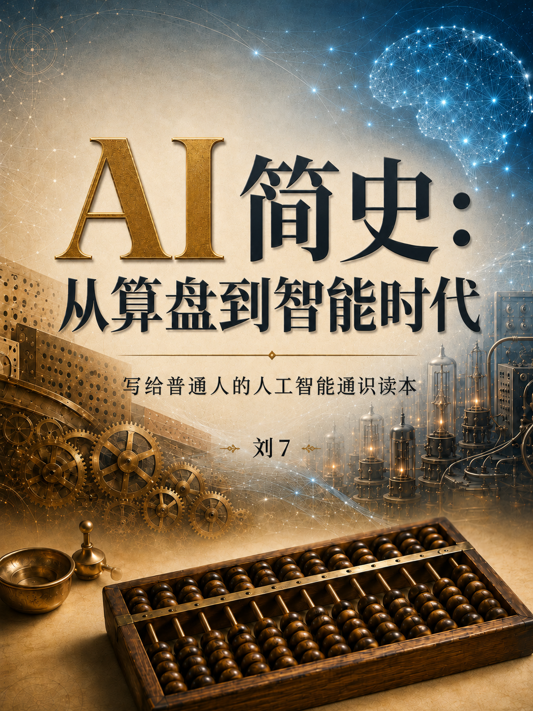
当我在2026年的夏日回望人工智能七十余年的发展历程时，不禁感慨万千。从古希腊先哲对逻辑与推理的深邃思考，到今日大模型能够流畅地与我们对话、编写代码、创作艺术——人类文明正在经历一场前所未有的智能革命。
人工智能的故事，本质上是一部人类探索自身智力本质的史诗。我们试图理解什么是思考，什么是学习，什么是创造力，并追问一个根本性的问题：人类的心智能否被机器复现？这个问题不仅关乎技术，更触及哲学、伦理与人类存在的深层意义。
本书试图为读者呈现一幅完整的AI发展历史画卷。我们将追溯到公元前数千年，从人类最早的计算工具开始讲起；我们将穿越中世纪的黑暗，见证文艺复兴时期科学思想的觉醒；我们将走进19世纪的英国，看巴贝奇和艾达如何构想出第一台可编程计算机；我们将驻足20世纪的美国，感受达特茅斯会议上火花四射的激情；我们也将审视那些被称为"AI寒冬"的黯淡岁月，理解希望与失望交织的复杂情感。
更重要的是，本书将带领读者走进最近十年的AI大爆发——从AlexNet在ImageNet竞赛上一鸣惊人，到AlphaGo击败世界围棋冠军；从Transformer架构的诞生，到GPT系列模型掀起的大模型浪潮；从ChatGPT引爆全球，到2025-2026年多模态智能体的全面崛起。这是一个技术迭代速度前所未有、竞争格局日趋多元、应用场景不断拓展的激动人心的时代。
在撰写本书的过程中，我深切地体会到：AI的发展从来不是一条直线。它充满了曲折、反复与意外。每一次重大突破背后，都有无数研究者的默默耕耘；每一次"寒冬"降临，也都孕育着下一次"春天"的种子。理解这段历史，有助于我们更好地把握当下，更清醒地展望未来。
本书面向所有对人工智能感兴趣的读者，尤其适合非计算机专业学生、高中生、大学生和希望建立AI基本素养的普通读者。v2版本在保留历史主线的基础上，增加了关键概念、使用方法、课堂讨论和现实案例，帮助读者不仅知道AI从哪里来，也能理解AI如何工作、如何被负责任地使用。让我们一起踏上这段穿越千年的智能探索之旅。
"人是什么？思维的本质是什么？我们能否制造出像人一样思考的机器？"——这些问题跨越千年，至今仍在回响。
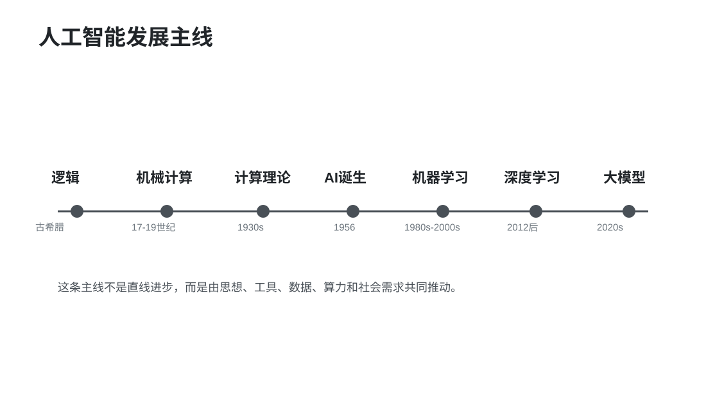
人工智能的故事，必须从古希腊讲起。大约公元前四百年，一位名叫亚里士多德（Aristotle）的哲学家在雅典的吕克昂学园漫步讲学，他提出的三段论逻辑体系，成为了人类历史上最早的形式化推理系统。
亚里士多德的三段论是一种精妙的推理结构：从大前提和小前提出发，必然地得出结论。例如，"所有人都是会死的；苏格拉底是人；因此苏格拉底会死的。"这种推理模式看似简单，却蕴含着深刻的思想——人类的思维过程可以被抽象为符号运算，而符号运算恰恰可以被机械地执行。这一洞见跨越了两千余年，直到20世纪中叶才在计算机科学中结出硕果。
亚里士多德不仅创建了逻辑学，还系统地研究了"灵魂"的本质。在《论灵魂》（De Anima）中，他将灵魂分为植物灵魂、动物灵魂和理性灵魂三个层次。最顶层的理性灵魂——即人类进行抽象思考和逻辑推理的能力——正是后世AI研究者试图模拟的核心目标。亚里士多德的工作提示了一个关键命题：如果思维本质上是一种计算过程，那么机器在原则上也有可能执行这种计算。
除了亚里士多德，古希腊还贡献了另一位对后世影响深远的思想家——毕达哥拉斯（Pythagoras）。毕达哥拉斯学派相信"万物皆数"，认为宇宙的规律可以用数学关系来表达。这一思想在两千多年后被图灵和冯·诺依曼等计算机先驱继承，成为数字化世界的哲学基石。此外，古希腊数学家欧几里得编撰的《几何原本》，建立了人类历史上第一个公理化体系，展示了如何从少数基本公理出发，通过严密的逻辑推导构建起宏大的知识体系。这种公理化方法，后来成为计算机科学和人工智能的重要方法论基础。
与古希腊偏重理论逻辑的传统不同，古代东方文明在实用计算领域取得了辉煌成就。大约在公元前2700年，美索不达米亚平原上的苏美尔人发明了算盘——人类历史上最早的数字计算工具。这种看似简单的装置，通过珠子在细杆上的移动来表示数字和进行运算，其设计理念延续至今。
算盘很快传播到古埃及、古希腊和中国，在不同文明中演化出各自的形态。中国古代的算盘在宋代（约公元10-13世纪）发展成熟，采用上二下五的珠型设计，配合一套精妙的口诀系统，熟练的算盘操作者可以在加减乘除运算上与现代计算器一较高下。算盘的意义远不止于一种计算工具——它证明了人类的智力活动（至少是部分智力活动）可以通过物理装置来辅助甚至替代，这一思想正是后世计算机和人工智能的核心前提。
更令人惊叹的是1901年在希腊安提基特拉岛附近海域发现的安提基特拉机械（Antikythera Mechanism）。这件约公元前200年制造的青铜装置，被认为是世界上最早的模拟计算机。它能够精确计算和预测太阳、月亮及行星在天球上的位置，还可以预报日食和月食。这个装置的精密程度令现代科学家叹为观止——它由至少30个相互啮合的青铜齿轮组成，其制造工艺之精湛，直到14世纪欧洲出现天文钟才被超越。安提基特拉机械的存在证明，古代世界已经掌握了制造复杂计算装置的技术能力，只是这种能力未能持续传承和发展。
在中国古代，除了算盘之外，《九章算术》等数学著作也展示了高度发达的计算传统。中国古代数学家发明了十进制位值制记数法、负数概念和线性方程组的解法，这些成就为后世的计算科学提供了重要的数学基础。尤其值得一提的是，中国古代对"术"（算法）的重视——《九章算术》中的每一题都配有"术"，即解题的具体步骤和方法——这种算法化的思维方式，与计算机程序设计的核心思想不谋而合。
中世纪欧洲在AI思想史上的贡献相对有限，但阿拉伯世界扮演了重要的知识保存和传递角色。8至13世纪的阿拉伯学者将大量希腊哲学和科学著作翻译成阿拉伯文，并加以评注和发展。阿尔-花拉子米（Al-Khwarizmi）在9世纪撰写的《印度数字算术》，系统介绍了来自印度的十进制位值制记数法和运算法则，"算法"（algorithm）一词正是从他名字的拉丁化形式演变而来。阿尔-花拉子米的工作不仅为后来的欧洲数学复兴奠定了基础，其名字更成为了计算机科学核心概念的词源。
12世纪以后，随着十字军东征和东西方贸易的发展，阿拉伯学者保存的希腊和东方知识逐渐回流欧洲。亚里士多德的逻辑学著作被重新发现和翻译，引发了经院哲学对理性与信仰关系的深入讨论。虽然经院哲学的讨论主要围绕神学问题展开，但它培养了欧洲知识分子运用形式逻辑进行严格推理的习惯，为后来科学革命的出现准备了思想土壤。
文艺复兴时期（14-17世纪），欧洲迎来了科学和艺术的全面复兴。达·芬奇设计了各种精巧的机械装置，虽然其"机器人"设计大多停留在图纸阶段，但这种将人体运动机械化的尝试，体现了人类模拟生命活动的持久渴望。哥白尼、伽利略和牛顿等科学家建立的新物理学，展示了大自然的规律可以被数学精确描述——这一信念成为后世科学家试图用数学模型模拟智能的强大动力。笛卡尔提出的"我思故我在"，虽然旨在确立人类意识的主体性，却也引发了一个深刻的问题：如果思维是独立于物质实体的，那么机器是否可能拥有类似的思维能力？这个被称为"心身问题"的哲学命题，至今仍是AI哲学讨论的核心议题之一。
17世纪是科学革命的世纪，也是人类对理性和机械的理解发生根本性变革的世纪。法国哲学家和数学家笛卡尔（Rene Descartes）不仅提出了著名的"我思故我在"，还将动物（进而可能包括人）的身体视为精密的机器。他在《谈谈方法》中描述了动物的身体如何可以被理解为机械装置，这一思想后来被他的追随者推向极端，形成了"动物是机器"的机械论哲学。虽然笛卡尔本人坚持人类拥有非物质的心灵，但他的方法论为后来的心身二元论争论埋下了伏笔。
同一时期，英国哲学家托马斯·霍布斯（Thomas Hobbes）在《利维坦》中提出了一个更为激进的观点：思维本质上就是"计算"，是"心灵的加减法"。霍布斯写道："通过推理，我理解为计算，也就是对共同约定的普遍名词含义进行加减。"这是西方哲学史上第一次明确将理性思维与数学计算等同起来。如果思维即计算，而计算可以被机械地执行，那么机器思考的可能性就呼之欲出了。霍布斯的这一论断，被后世AI研究者视为思想先驱的宣言。
在德国，数学家兼哲学家莱布尼茨（Gottfried Wilhelm Leibniz）同时进行着两项影响深远的工作。一方面，他与牛顿独立发明了微积分，为现代科学提供了强有力的数学工具；另一方面，他梦想创建一种"普遍符号语言"（characteristica universalis），能够将一切人类思想表达为符号的组合和运算。莱布尼茨还设计了可以进行四则运算的机械计算器——步进计算器（Stepped Reckoner），这是人类历史上第一台能够自动进行乘除运算的机器。莱布尼茨的"计算宇宙"梦想，预示了后来符号AI和知识表示的发展方向。他那句名言"一切皆可计算"，至今仍在激励着AI研究者不断前行。
"工欲善其事，必先利其器。"——《论语·卫灵公》
在人类文明史的早期，计算是一种高度依赖人脑的技能。随着社会的发展，贸易、税收、天文历法预测等活动对计算能力提出了越来越高的要求，催生了各种辅助计算的工具。
中国古代的算筹是世界上最早的系统性计算工具之一。考古发现表明，算筹的使用可以追溯到春秋战国时期（公元前770年-公元前221年）。算筹是一组细长的竹制或木制小棍，通过不同的摆放方式来表示数字——一根竖放的算筹表示1，一根横放的算筹表示5，通过纵横交错排列可以表示任意大的数字。算筹系统采用了世界上最早的十进制位值制记数法，这一发明后来被印度数学家继承和发展，并通过阿拉伯世界传播到欧洲，成为全人类共同的数学遗产。使用算筹进行运算需要熟练掌握一整套规则和技巧，熟练的使用者可以进行相当复杂的数学计算。算筹的局限性在于操作较为繁琐，且难以保存计算过程——这些问题后来推动了算盘的发明和普及。
算盘的出现标志着人类计算工具的一次重大飞跃。中国的珠算算盘通常由矩形木框和若干根贯穿的细杆组成，每根杆上穿着可以上下移动的珠子。标准的商用算盘采用上二下五的珠型设计，可以方便地表示十进制数字，并通过口诀指导的拨珠动作完成四则运算。珠算不仅大大提高了计算效率，更重要的是建立了一套标准化的计算程序——珠算口诀本质上就是最早的"计算算法"之一。在算盘普及的数百年间，它成为商人、账房先生和学者的必备工具，也培养了一代又一代人的计算思维。直到20世纪70年代电子计算器普及之前，算盘一直是东亚地区最主要的计算工具。
日本在明代从中国引入算盘后，发展出了独特的珠算文化。日本珠算教育至今仍在延续，全国有多所珠算学校，定期举办珠算等级考试和竞技比赛。研究发现，长期的珠算训练不仅能提高计算速度和准确性，还能促进儿童的空间想象力和工作记忆能力的发展。这揭示了一个深刻的事实：工具不仅延伸了人的能力，也在塑造人的思维方式——这一洞见对后来的人机交互和认知科学研究产生了重要影响。
1901年，希腊海绵潜水员在安提基特拉岛附近海域发现了一艘古罗马时期的沉船遗迹。在打捞上来的大量青铜和大理石雕像中，有一块严重腐蚀的金属物体最初并未引起考古学家的特别注意。然而，经过仔细观察，学者们惊讶地发现，这是一台精密的齿轮机械装置——后来被命名为安提基特拉机械。
安提基特拉机械的制造年代约为公元前150年至公元前100年之间，相当于中国的西汉中期。这台装置的复杂程度远超此前人们对古代技术的认知：它由至少30个相互啮合的青铜齿轮组成（其中最大的齿轮直径约14厘米，拥有223个齿），能够模拟太阳、月亮和当时已知的五颗行星在天空中的运动。机械的表面有刻度盘和指针，可以显示天文位置和日月食预报，背面还刻有使用说明。
对安提基特拉机械的研究揭示了多个令人震惊的事实。首先，它所采用的齿轮传动技术和天文计算方法，代表了古希腊天文学和机械制造的极高水平。其次，装置中使用了差速齿轮机构——这种技术直到14世纪欧洲天文钟的出现才再次出现，中间相隔了约一千五百年。第三，机械的制造精度极高，齿轮的齿形和啮合关系经过精心设计，可以确保在长时间运转中保持准确性。
安提基特拉机械在AI和计算机史上的意义在于：它证明了古代世界已经掌握了制造复杂自动计算装置的能力，且这种装置的复杂度已足以模拟天文现象——本质上是一种物理模拟计算机。如果这种技术传统没有中断，人类或许可以提前数百年进入机械计算的时代。安提基特拉机械的失传，提醒我们技术发展的脆弱性，也让我们更加珍惜那些推动历史前进的关键时刻。
中世纪欧洲虽然被称为"黑暗时代"，但在机械技术方面仍取得了一定进展。水钟、沙漏等计时装置不断改进，大型教堂中的天文钟开始出现。这些装置虽然主要用于宗教目的，但其中的齿轮传动和自动机构设计，为后来的机械计算机积累了宝贵的工程经验。
阿拉伯世界在中世纪保持了较高的科学技术水平。波斯学者阿尔-比鲁尼设计了多种天文仪器，阿拉伯工匠制造了精密的星盘和象限仪。12世纪阿拉伯工程师加扎利（Al-Jazari）撰写的《精巧机械装置知识之书》，详细描述了多种自动机械的设计，包括自动供水系统、音乐自动装置和可编程的人偶。加扎利的可编程自动人偶被认为是世界上最早的"可编程机器"之一——通过更换插入的销钉，可以改变人偶的动作程序。这种通过物理方式改变机器行为的思路，后来演变为穿孔卡片控制机械的技术路线。
在中国，东汉时期的张衡发明了浑天仪和地动仪，展示了古代中国在天文仪器和自动检测装置方面的高超技艺。北宋时期的苏颂主持建造了水运仪象台，这是一座集天文观测、计时和演示功能于一体的大型机械装置。水运仪象台高12米，分为三层：上层放置浑仪用于观测天体，中层放置浑象用于演示天象，下层是复杂的报时和动力系统。整个装置由水力驱动，通过一系列齿轮和杠杆机构，能够自动报时并模拟天体的运动。尤其值得注意的是，水运仪象台中使用了早期的"擒纵机构"——这是控制齿轮匀速运动的关键装置，后来成为机械钟表的核心部件。英国科学技术史家李约瑟认为，水运仪象台代表了"欧洲天文钟的直系祖先"。
纵观古代和中世纪的计算工具发展史，我们可以看到一个重要的思想转变过程。早期的计算工具——如算筹和算盘——本质上是人类计算的辅助，它们延伸了人的手指和大脑，但运算的每一步仍由人控制和执行。这些工具是被动的，它们不会自行完成计算，而是等待人的指令。
而安提基特拉机械、加扎利的自动人偶和水运仪象台则代表了一类不同的装置——它们是自动的，一旦启动就可以按照预定的程序运行，不需要人的持续干预。这类装置的核心特征在于内置了一套固定的"指令"（通过齿轮比、销钉位置等方式编码），使其能够自主地完成一系列复杂的动作。这种自主性虽然极为有限，却预示了后来自动机和计算机的基本工作原理。
从被动工具到自动机器的思想跨越，是AI发展史的第一个关键节点。它表明：机器不仅可以延伸人的体力，也可以在某种程度上替代人的智力活动——至少是那些可以被程序化、规则化的智力活动。这一思想一旦萌芽，就再也无法被扑灭。在接下来的几个世纪里，它将在帕斯卡、莱布尼茨、巴贝奇和图灵等天才的手中，一步步走向成熟，最终结出计算机和人工智能的硕果。
"逻辑的定律就是思维的定律。"——乔治·布尔，1847年
1815年11月2日，乔治·布尔（George Boole）出生在英国林肯郡的一个贫苦家庭。他的父亲是一位鞋匠，对科学和数学有着浓厚的兴趣。布尔从小展现出非凡的数学天赋，主要依靠自学成长，12岁时就开始阅读高深数学著作。20岁时，他在林肯开设了自己的学校，一边教书一边继续数学研究。
1847年，32岁的布尔出版了《逻辑的数学分析》（The Mathematical Analysis of Logic），在这本只有几十页的小册子中，他提出了一种革命性的思想：将亚里士多德建立的古典逻辑学转化为代数运算系统。布尔发现，逻辑命题可以被表示为变量，而逻辑关系（与、或、非）可以被表示为代数运算。在布尔系统中，变量只能取两个值：0（假）或1（真）；逻辑"与"运算对应乘法，逻辑"或"运算对应加法，逻辑"非"运算对应减法。
布尔随后对这套系统进行了更完善的阐述。1854年，他出版了传世之作《思维规律的研究》（An Investigation of the Laws of Thought），系统建立了后来被命名为"布尔代数"的逻辑数学体系。在这本书中，布尔证明了复杂的逻辑推理可以被完全归约为代数计算——这一成果具有划时代的意义。它意味着，人类最引以为傲的理性思维过程，至少在形式上可以被转化为机械的计算步骤。这为后来用机器模拟智能提供了坚实的数学基础。
布尔的成就在当时并未引起广泛关注。许多数学家认为他的工作是一种有趣的智力游戏，而非严肃的数学研究。逻辑学家则对用代数方法处理逻辑问题持怀疑态度。布尔本人也在1864年因肺炎过早去世，年仅49岁，未能看到他的理论在后世产生的巨大影响。然而，他的工作并没有被遗忘。几十年后，一位年轻的美国研究生将布尔代数与电路设计联系起来，从而彻底改变了人类文明的进程。
1937年，麻省理工学院的电气工程系研究生克劳德·香农（Claude Shannon）完成了他的硕士学位论文《继电器与开关电路的符号分析》（A Symbolic Analysis of Relay and Switching Circuits）。这篇论文被公认为20世纪最具影响力的工程硕士论文之一，因为它首次证明了布尔代数可以直接应用于电路设计。
香农的洞见简洁而深刻：电路中的继电器开关只有两种状态——开或关，这恰好对应布尔代数中的1和0。因此，任何一个布尔表达式都可以被实现为一个由继电器组成的电路，而任何复杂的逻辑运算都可以通过适当的电路连接来完成。这意味着，逻辑运算不再是抽象的纸上游戏，而可以被物理地实现为实际的电子装置。
香农的论文发表时，正值数字电路技术开始发展的关键时期。继电器计算机已经在实验室中出现，而电子管技术也在快速进步。布尔代数为这些新兴技术提供了强大的理论工具——工程师们可以使用布尔表达式来设计、分析和优化逻辑电路，而不再需要依赖经验和试错。这一方法论很快成为数字电路设计的标准范式，至今仍是计算机工程和集成电路设计的基石。
香农后来成为信息论的创始人，他在1948年发表的《通信的数学理论》开创了信息科学的新纪元。信息论为量化信息的存储和传输提供了数学框架，其中"比特"（bit）——二进制数字的缩写——成为信息的基本单位。比特正是布尔代数中0和1的物理实现，它将布尔的形式逻辑与信息的物理表示完美地统一起来。从布尔到香农，从逻辑代数到信息论，一条清晰的理论脉络将19世纪的抽象数学与20世纪的数字技术紧密连接。
布尔的工作开启了一个被称为"数理逻辑"或"符号逻辑"的新学科领域。在他之后，众多数学家对逻辑代数进行了扩展和完善。奥古斯都·德·摩根（Augustus De Morgan）提出了著名的德·摩根定律，描述了逻辑"与"和"或"运算在取反操作下的转换关系。这些定律后来成为数字电路设计和程序逻辑优化的基本工具。
19世纪末，德国数学家戈特洛布·弗雷格（Gottlob Frege）在布尔工作的基础上迈出了更大的一步。1879年，弗雷格出版了《概念文字》（Begriffsschrift），创建了一种严格的形式逻辑系统，被称为"谓词逻辑"或"一阶逻辑"。与布尔代数主要处理命题之间的关系不同，弗雷格的系统能够表达更复杂的逻辑结构，包括量词（"所有"和"存在"）和嵌套的函数关系。
弗雷格的工作对后来的计算机科学产生了深远影响。谓词逻辑成为知识表示和自动推理的理论基础，而他所发展的形式化方法——即使用精确的符号系统来消除自然语言的歧义——直接启发了编程语言的设计。事实上，许多现代编程语言的核心特征，如变量绑定、函数定义和递归结构，都可以在弗雷格的逻辑系统中找到雏形。
1910年至1913年间，英国哲学家伯特兰·罗素（Bertrand Russell）和数学家阿尔弗雷德·怀特海（Alfred North Whitehead）出版了三大卷的《数学原理》（Principia Mathematica），试图将整个数学体系建立在严格的形式逻辑基础之上。虽然这一宏伟目标最终被哥德尔的不完备性定理证明是不可能完全实现的，但《数学原理》极大地推动了形式系统研究的发展。它展示了一个重要的事实：即使是人类最抽象的智力活动——数学推理——也可以被归约为形式化的符号操作。
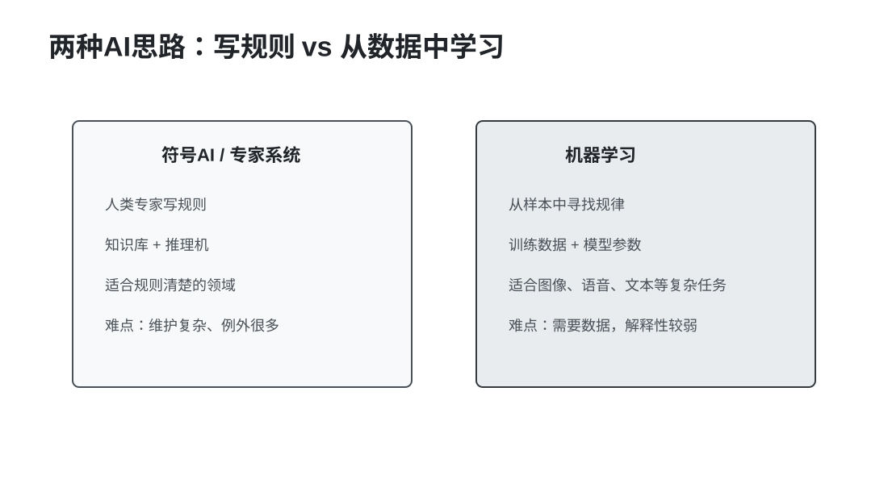
20世纪30年代，形式逻辑研究迎来了一系列里程碑式的成果，其中最著名的是库尔特·哥德尔（Kurt Godel）在1931年证明的不完备性定理。哥德尔证明，任何一个足够强大且一致的形式系统，都必然存在无法在该系统内被证明或否证的真命题。这一结果震动了数学界和哲学界，它表明形式推理虽然强大，但本质上是有局限的。
然而，不完备性定理对计算机和AI的发展来说并非坏消息。恰恰相反，它帮助研究者更清楚地认识到了形式系统的边界，从而能够更好地设计在这些边界内工作的计算系统。哥德尔的工作还引发了对"可计算性"概念的深入研究，这直接导致了图灵机概念的诞生——而图灵机正是现代计算理论的基石。
从布尔代数到谓词逻辑，从《数学原理》到哥德尔定理，19世纪和20世纪初的逻辑学研究为人工智能的兴起准备了三个关键要素：形式化的知识表示（如何用符号精确表达事实和规则）、机械化的推理过程（如何从已知事实推导出新结论）和对形式系统能力的清醒认知（了解什么可以被计算，什么不可以）。这三个要素将在20世纪中叶汇聚到一起，催生出人工智能这门崭新的学科。
"我已经构思出一台能够执行任何数学运算的机器。"——查尔斯·巴贝奇，1837年
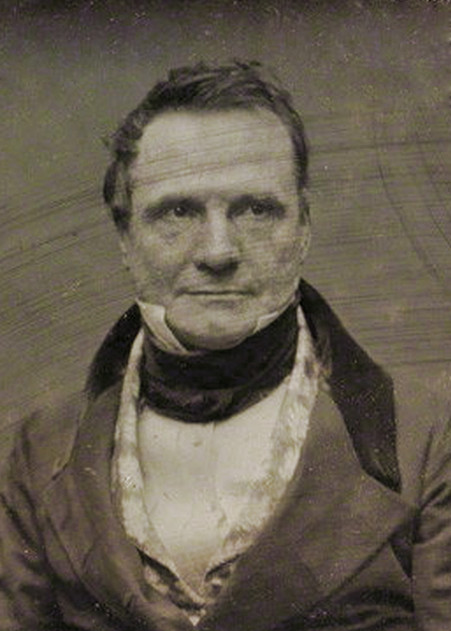
1642年，年仅19岁的法国数学家和哲学家布莱士·帕斯卡（Blaise Pascal）为了减轻父亲作为税务官繁重的计算工作，发明了人类历史上第一台实用的机械计算器——帕斯卡计算器（Pascaline）。这台精巧的装置由一系列相互啮合的齿轮组成，可以进行六位数的加法和减法运算。当某一位的数字从9变为0时，一个进位机构会自动将高一位的数字加1，实现了机械化的进位操作。
帕斯卡计算器虽然只能做加减法，且造价昂贵、操作不够便捷，但它的出现具有划时代的意义。它证明了复杂的算术运算可以被机械装置自动完成，而不需要人脑的直接参与。帕斯卡本人对自己的发明非常自豪，他制造了约50台帕斯卡计算器，分赠给欧洲的贵族和学者。这些精致的机械装置成为当时科学和工艺水平的象征，也激发了其他发明家改进和扩展机械计算的灵感。
1673年，德国博学家戈特弗里德·威廉·莱布尼茨（Gottfried Wilhelm Leibniz）在巴黎展示了他的步进计算器（Stepped Reckoner）。与帕斯卡计算器相比，莱布尼茨的机器不仅可以做加减法，还能进行乘法和除法运算——它通过反复的加法来实现乘法，通过反复的减法来实现除法。莱布尼茨还设计了一种被称为"莱布尼茨轮"（Leibniz Wheel）的巧妙机构，大大改进了齿轮传动的效率。
莱布尼茨对计算和思维的思考比他的机器更为深远。他梦想创建一种"普遍符号语言"（characteristica universalis），能够将一切人类知识编码为符号的组合，并通过规则的运算来自动推导出新的真理。这个宏大的梦想虽然没有在他有生之年实现，但它预示了后来符号AI和知识工程的发展方向。莱布尼茨还曾设想过建立庞大的知识库，将人类的所有学问整理成系统的符号形式——这几乎就是今天知识图谱和大型语言训练数据集的哲学先声。
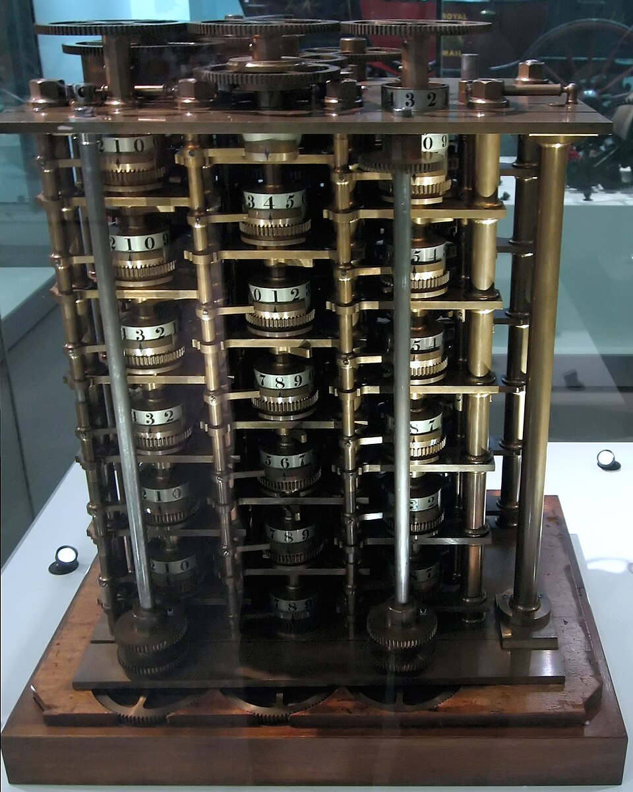
如果说帕斯卡和莱布尼茨是机械计算的先驱，那么查尔斯·巴贝奇（Charles Babbage）则是现代计算机的真正奠基人。1791年，巴贝奇出生于英国一个富裕的银行家家庭。他在剑桥大学学习数学时，就对当时广泛使用的对数表和天文表格中大量存在的错误深感震惊。这些表格是由人工计算员编制和维护的，错误率居高不下，给航海、天文学和工程学带来了严重的问题。
1822年，巴贝奇开始设计一台名为差分机（Difference Engine）的机械计算装置。差分机的核心思想是利用"差分法"来计算多项式函数的值——对于n次多项式，其n阶差分是一个常数，因此只需要进行加法运算就可以逐项求出函数值。这意味着，差分机可以通过纯机械的方式自动生成高精度的数学表格，完全消除了人工计算的错误。
巴贝奇为差分机的设计投入了巨大的精力。他设计的差分机一号（Difference Engine No.1）需要约25000个精密零件，重达数吨。英国政府为此拨款17000英镑——这在当时是一笔巨款——并建造了一个专门的车间来制造零件。然而，由于当时精密制造技术的限制，加上巴贝奇不断修改设计，差分机一号始终未能完成。1833年，政府停止了资助，项目被迫中止。
巴贝奇没有因此气馁。在差分机项目失败的过程中，他已经构思出了一个更加宏大的计划——分析机（Analytical Engine）。1837年，巴贝奇完成了分析机的初步设计，这台机器的设计包含了现代计算机几乎所有的核心特征：
首先，分析机拥有一个被称为"存储库"（Store）的部件，可以保存1000个50位十进制数——这就是现代计算机的内存（Memory）。其次，分析机拥有一个被称为"运算室"（Mill）的部件，可以执行加、减、乘、除四则运算——这就是现代计算机的中央处理器（CPU）。第三，分析机可以通过穿孔卡片（Punched Cards）来输入数据和指令——这就是现代计算机的程序（Program）。第四，分析机拥有条件跳转和循环控制能力——这就是现代计算机的控制单元（Control Unit）。
分析机的设计超越了它所处的时代至少一个世纪。它不仅可以按照预定程序自动执行计算，还可以根据中间结果改变计算的流程，甚至可以修改自己的程序。巴贝奇意识到，分析机不仅仅是一台计算器，而是一台通用的计算机器——它可以执行任何可以被描述的算法。这一"通用计算"的思想，后来被图灵用数学方式严格证明，成为计算机科学的理论基础。
1833年，17岁的贵族少女艾达·洛芙莱斯（Ada Lovelace，全名Augusta Ada King, Countess of Lovelace）在一次聚会上结识了查尔斯·巴贝奇。艾达是著名诗人拜伦勋爵的女儿，但她从小就在母亲的引导下学习数学和科学，展现出非凡的智力天赋。她被巴贝奇的分析机构想深深吸引，从此与巴贝奇建立了长期的友谊和合作关系。
1842年，意大利数学家路易吉·梅纳布雷亚（Luigi Menabrea）发表了一篇关于分析机的法语论文。艾达受托将这篇论文翻译成英文，并在巴贝奇的建议下添加了大量自己的注释。这些注释的长度是原文的三倍，其中包含了后来被公认为世界上第一个计算机程序的描述——一段计算伯努利数的算法。艾达详细描述了如何将数学公式分解为分析机可以执行的一系列操作，包括变量的存储、运算的执行和结果的处理。
艾达的注释中还包含了一个更加深刻的洞见：分析机的潜力远不止于数值计算。她写道："分析机可以编织代数图案，正如雅卡尔提花机编织花朵和树叶一样。"她预见到，这台机器可以处理不仅仅是数字的符号——音乐、艺术、文字，一切可以被符号化表达的事物，都有可能成为分析机的处理对象。这个预言在170多年后的大模型时代得到了惊人的应验：今天的AI系统确实能够创作音乐、绘画、写作，正如艾达所预见的那样。
艾达还敏锐地指出了分析机与之前所有机器的本质区别："分析机没有自己的创造性，它只能按照我们教给它的去做。"她意识到，机器的智能来源于人类的编程和设计，而非机器本身具有独立的心智。这一观点在今天关于AI伦理和意识的讨论中，仍然具有重要的参考价值。
遗憾的是，巴贝奇的分析机由于种种原因始终未能建成。巴贝奇于1871年去世，带走了他的宏伟梦想。艾达也在1852年因癌症去世，年仅36岁。然而，他们的思想遗产并未消亡。1910年，巴贝奇的儿子小查尔斯·巴贝奇建造了差分机二号的一部分，证明了巴贝奇的设计是可行的。1991年，伦敦科学博物馆按照巴贝奇的原始图纸，使用19世纪的制造技术，成功建造出了完整的差分机二号——这台机器可以精确计算到31位，完美验证了巴贝奇的工程设计。
巴贝奇从法国纺织工业中借鉴了穿孔卡片的技术。1801年，法国发明家约瑟夫·玛丽·雅卡尔（Joseph Marie Jacquard）设计了一种自动提花织机，通过穿孔卡片来控制经线的提起和放下，从而织出复杂的图案。一张卡片对应图案的一行，卡片的穿孔位置决定了哪些经线被提起。通过更换卡片序列，同一台织机可以织出完全不同的图案——这就是最早的"可编程"机器。
雅卡尔提花机在全欧洲迅速传播，引发了纺织业的革命，也触动了许多知识分子对自动化和程序控制的思考。巴贝奇收藏了一幅用提花织机织成的肖像画——正是雅卡尔本人的肖像——他常常向来访者展示这幅作品，并说："看，这台机器用线织出了一幅肖像，我的分析机将用数字织出整个宇宙。"穿孔卡片的技术后来在19世纪末被美国工程师赫尔曼·何乐礼（Herman Hollerith）用于人口普查数据处理，进而发展成了IBM公司的核心业务，为电子计算机时代的到来铺平了道路。
从帕斯卡到巴贝奇，从莱布尼茨到艾达，机械计算时代跨越了两个多世纪。这一时期的发明和思想为后来的计算机革命奠定了多方面的基础：
技术基础：精密机械制造技术的发展，齿轮传动机构的设计经验，穿孔卡片的数据输入方法，这些都是后来电子计算机可以直接借鉴的工程遗产。巴贝奇对分离存储和运算单元的设计，至今仍是计算机体系结构的核心范式。
理论基础：巴贝奇和艾达提出的"通用计算"思想，证明了机器可以被设计为执行任意算法的通用装置，而不仅仅是专用的计算器。这一思想后来通过图灵机得到了严格的数学证明，成为计算机科学的理论基石。
思想基础：机械计算时代最令人震撼的启示是，人类的智力活动——至少是一部分智力活动——可以被分解为一系列机械步骤，并被自动执行。这一观念打破了智能与生命的绑定关系，为后来人工智能的诞生扫清了最大的思想障碍。
然而，机械计算时代也暴露了纯机械方案的固有局限。机械部件的磨损、速度和精度限制，使得机械计算机无论设计多么精妙，都无法满足日益增长的计算需求。突破这一瓶颈的，将是20世纪诞生的全新技术——电子技术。
"我们可以将机器的计算能力与人类的计算能力进行比较。"——艾伦·图灵，1936年

20世纪初，数学家们面临一个根本性的问题：什么是"可计算的"？换句话说，哪些数学问题在原则上可以被机械地求解？这个问题看似简单，却触及数学基础的核心。
1928年，德国数学家大卫·希尔伯特（David Hilbert）在国际数学家大会上提出了著名的"判定问题"（Entscheidungsproblem）：是否存在一个通用的算法，能够判定任意一个数学命题是否为真？希尔伯特对此持乐观态度，他相信这样的算法是存在的，数学家们只需要去发现它。然而，年轻的英国数学家艾伦·图灵（Alan Turing）给出了否定的答案。
1936年，当时年仅24岁的图灵发表了题为《论可计算数及其在判定问题上的应用》（On Computable Numbers, with an Application to the Entscheidungsproblem）的论文。在这篇具有里程碑意义的论文中，图灵没有直接讨论"算法"的概念——因为当时还没有一个被普遍接受的、精确的"算法"定义——而是发明了一种抽象的机器模型，后来被称为图灵机（Turing Machine）。对初学者来说，算法可以先理解为一份办事流程清单：给定输入，按步骤处理，得到输出。现代AI里的算法更复杂一些，它还会根据数据和反馈调整自己的处理方式。
图灵机的构造极为简洁。它由一条无限长的纸带、一个读写头和一个控制单元组成。纸带被划分为一个个小方格，每个方格上可以写入一个符号（如0或1）。读写头可以在纸带上左右移动，读取当前方格的符号，根据控制单元的指令决定写入新符号或保持不变，然后向左或向右移动一格。控制单元有一组内部状态，根据当前状态和读到的符号，决定下一步的操作。这样一台看似简单的机器，却能够模拟任何可以被描述的算法。
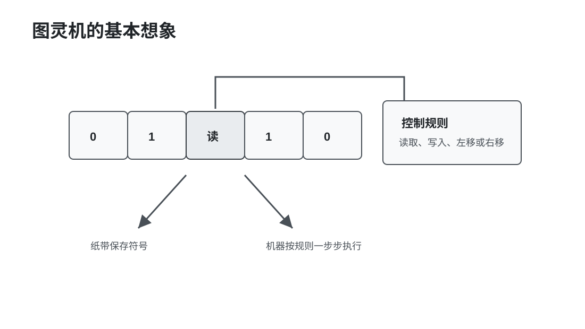
图灵机的真正威力在于一个被称为通用图灵机（Universal Turing Machine）的概念。通用图灵机是一台特殊的图灵机，它可以模拟任何其他图灵机的行为。具体来说，如果把另一台图灵机的描述编码为纸带上的数据，通用图灵机就能够读取这个描述，并完全按照被描述的图灵机的规则运行。
通用图灵机的概念具有革命性的意义。它表明，存在一台单一的机器，通过加载不同的"程序"（即其他图灵机的描述），就能够执行任何可计算的任务。这正是现代计算机的核心特征——通用性。我们使用的个人电脑、智能手机和服务器，本质上都是通用图灵机的物理实现。
图灵利用图灵机证明了希尔伯特的判定问题是不可能解决的——不存在一个通用算法能够判定所有数学命题的真假。这一结果被称为停机问题（Halting Problem）的不可解性。图灵的证明采用了自指的技巧：假设存在一个程序H可以判定任意程序是否会在给定输入上停机，那么可以构造一个新的程序P，当H判定P会停机时P就进入无限循环，当H判定P不会停机时P就停止。这种矛盾证明了H不可能存在。
停机问题的不可解性对人工智能具有重要的启示意义。它表明，即使是最强大的计算系统，也存在原则上无法解决的问题。这为后来AI研究者对系统能力的期望设定了一个理论上的上限。同时，停机问题也与AI安全和可验证性密切相关——如果一个AI系统的行为在理论上不可预测，那么如何确保它的安全性就成为了一个深刻的挑战。
几乎在图灵发表其论文的同时，美国数学家阿隆佐·丘奇（Alonzo Church）使用另一种方法——lambda演算——也得出了判定问题不可解的相同结论。丘奇的方法与图灵机看起来非常不同，但后来的研究证明，这两种计算模型是等价的——它们可以计算完全相同的函数类。
这一发现引发了一个更深层次的猜想：丘奇-图灵论题（Church-Turing Thesis）。这个论题断言，任何在直觉上可计算的函数，都可以被图灵机计算。换句话说，图灵机穷尽了"机械计算"的全部能力。丘奇-图灵论题虽然不是一个可以被严格证明的数学定理（因为它涉及"可计算"的直觉概念），但它被广泛接受为计算理论的基本假设。
丘奇-图灵论题对AI的意义在于：如果人类的思维过程在本质上是可计算的，那么原则上，一台足够强大的图灵机（也就是一台足够强大的计算机）就能够模拟人类思维。这为人工智能的可能性提供了理论上的保证。当然，这并不意味着实现AI是容易的——它只是表明，AI在理论上是可能的，不存在根本性的逻辑障碍。
艾伦·图灵的贡献远不止于计算理论。二战期间，他在英国的布莱切利公园（Bletchley Park）密码破译中心工作，领导了破解德国恩尼格玛密码机的团队。图灵设计的"炸弹机"（Bombe）是一种机电装置，能够系统地测试恩尼格玛密码的密钥组合，大大加速了密码破译的速度。据估计，图灵的工作使二战缩短了约2至4年，拯救了数百万人的生命。
战后，图灵继续从事计算机科学的研究。他参与了英国最早的电子计算机之一——ACE（Automatic Computing Engine）的设计工作，并提出了许多关于计算机软件和人工智能的前瞻性想法。1950年，图灵发表了另一篇影响深远的论文《计算机器与智能》（Computing Machinery and Intelligence），在这篇论文中，他提出了后来被称为图灵测试（Turing Test）的思想实验。
图灵测试的设定简单而精妙：一个人类评审员通过文字终端分别与一台机器和一个人类进行对话，但不知道哪个是机器、哪个是人类。如果评审员无法可靠地区分两者，那么就可以认为这台机器具备了智能。图灵认为，与其争论"机器能否思考"这个定义不清的问题，不如关注一个可以实际测试的问题："机器能否在行为上表现得像有智能一样？"
图灵测试在AI历史上引发了持续数十年的争论。支持者认为它提供了一个可行的智能判定标准；批评者指出，通过图灵测试并不等同于真正理解或拥有意识。无论如何，图灵测试将AI从哲学思辨推向了可操作的研究议程，为这门新学科设定了第一个明确的目标。2014年，一个名为Eugene Goostman的聊天机器人声称通过了图灵测试（在严格的5分钟对话限制下），引发了新一轮的争论。而大语言模型出现后，图灵测试的原始版本已不再构成重大挑战，促使研究者提出更加严格的评判标准。
1954年，图灵因同性恋身份被英国政府起诉和化学阉割。1954年6月7日，图灵吃下浸过氰化物溶液的苹果，结束了自己42岁的生命。直到2009年，英国政府才正式为对图灵的迫害道歉；2013年，英国女王伊丽莎白二世授予图灵皇家赦免。图灵的悲剧人生为这位科学天才的传奇增添了浓重的人文色彩，也使后来的AI研究者更加关注技术的伦理和社会维度。
"在未来的岁月里，可能只有非常少的人能参与到计算机编程的喜乐中来。"——约翰·冯·诺依曼，1947年

20世纪30年代末至40年代初，世界正陷入第二次世界大战的烽火之中。战争对计算能力提出了前所未有的迫切需求——弹道表的计算、密码的破译、原子弹的设计，都需要大量的数值计算。在这个背景下，电子计算机从理论构想迅速走向工程现实。
早期的电子计算机项目几乎都在秘密进行。1939年至1942年间，德国工程师康拉德·楚泽（Konrad Zuse）在柏林独立设计并建造了Z3计算机——被认为是世界上第一台可编程的电磁继电器计算机。Z3使用2600个继电器，可以进行浮点数运算，并通过穿孔电影胶片来输入程序。虽然楚泽的工作在战后才被外界知晓，但他的成就是欧洲计算机发展的重要里程碑。
与此同时，英国政府秘密资助了巨像计算机（Colossus）的建造，专门用于破译德国的高级密码。巨像计算机由工程师汤米·弗劳尔斯（Tommy Flowers）设计，使用了约1600个电子管（vacuum tubes），于1943年12月开始运行。它是世界上第一台全电子的数字计算机，其运算速度比继电器计算机快了约100倍。巨像计算机的成功运行是电子计算机时代的开端，但它的存在被严格保密了30年，直到1970年代才为世人所知。
在美国，爱荷华州立大学的约翰·阿塔纳索夫（John Atanasoff）和克利福德·贝里（Clifford Berry）于1939年至1942年间建造了ABC计算机（Atanasoff-Berry Computer），主要用于求解线性方程组。ABC使用了电子管进行算术运算，但尚未实现程序存储。1946年，宾夕法尼亚大学的约翰·莫奇利（John Mauchly）和普雷斯珀·埃克特（J. Presper Eckert）完成了ENIAC（Electronic Numerical Integrator and Computer）的建造。ENIAC重达30吨，占地约167平方米，使用了约18000个电子管，每秒钟可以执行5000次加法运算——这是当时世界上运算速度最快的机器。
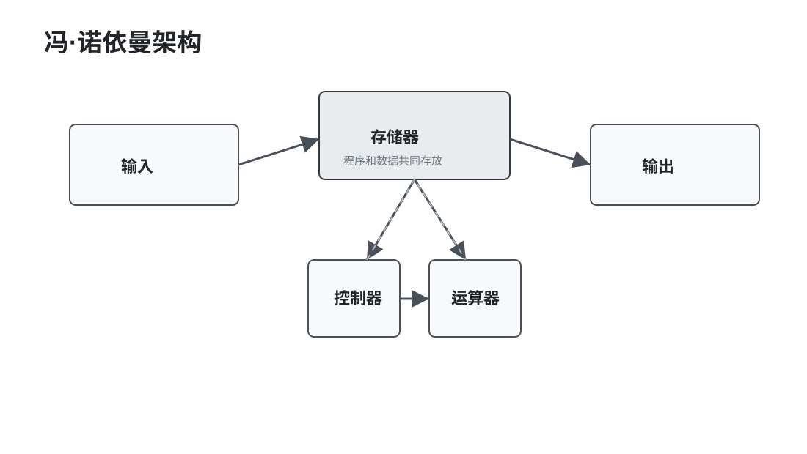
ENIAC虽然在工程上取得了巨大成功，但它有一个严重的缺陷：程序是通过物理重新接线来设置的，修改程序需要数小时甚至数天的手工操作。在ENIAC的建造过程中，一位杰出的数学家约翰·冯·诺依曼（John von Neumann）作为顾问参与其中，他敏锐地意识到了这一问题的根源，并提出了解决方案。
1945年6月，冯·诺依曼撰写了著名的《EDVAC报告书的第一份草案》（First Draft of a Report on the EDVAC），系统阐述了一种全新的计算机设计理念。这份报告虽然被一些人批评为未能充分承认其他贡献者的成果，但它所描述的架构设计如此简洁而优雅，以至于迅速成为此后数十年计算机设计的标准范式——这就是冯·诺依曼架构（von Neumann Architecture）。
冯·诺依曼架构的核心思想是存储程序（Stored Program）：指令和数据以同等地位存储在计算机的内存中，计算机在执行时从内存中依次取出指令并执行。这意味着，程序不再需要通过物理接线来"硬编码"，而是可以像数据一样被灵活地加载、修改和执行。这一设计带来了几个革命性的后果：
首先，通用性：同一台计算机可以通过加载不同的程序来执行完全不同的任务。它既是计算器，也是文字处理器，还可以是游戏机。这种通用性使得计算机成为真正意义上的"通用图灵机"的物理实现。
其次，自修改能力：由于程序和数据共享同一内存空间，程序可以在运行过程中修改自身或其他程序。这一能力为操作系统、编译器和高级编程语言的实现奠定了基础，但也带来了安全性和稳定性的挑战。
第三，程序设计的灵活性：程序员不再需要与硬件直接打交道，而是可以通过高级语言来编写程序，由编译器将高级语言翻译为机器指令。这种抽象大大简化了编程的复杂性，使更多的人能够使用计算机。
冯·诺依曼架构至今仍是绝大多数计算机的基本组织结构，从个人电脑到智能手机，从服务器到超级计算机，都遵循着这一经典设计。虽然现代计算机在冯·诺依曼架构的基础上增加了很多改进——如缓存、流水线、多核并行处理等——但其核心理念依然未变。
随着计算机硬件的快速发展，软件的重要性日益凸显。早期的计算机程序需要用机器语言（二进制指令）编写，这种编程方式极其繁琐且容易出错。20世纪50年代初，出现了第一批汇编语言和高级编程语言。
1951年，葛丽丝·霍普（Grace Hopper）为UNIVAC I计算机开发了第一个编译器（A-0系统），可以将类似英语的指令翻译为机器码。霍普后来领导了COBOL语言的开发，这是最早被广泛使用的商业编程语言之一。1957年，IBM发布了FORTRAN（FORmula TRANslation），这是第一个被广泛使用的高级科学计算语言。FORTRAN使科学家和工程师能够用接近数学公式的方式来编写程序，大大降低了科学计算的门槛。
1958年，约翰·麦卡锡（John McCarthy）在MIT发明了Lisp语言。Lisp的设计深受 lambda演算的影响，引入了递归、符号处理和自动垃圾回收等创新特性。Lisp后来成为人工智能研究的主要编程语言，其设计思想对后来的函数式编程语言产生了深远影响。1959年至1960年间，欧美计算机科学家联合开发了ALGOL 60语言，引入了块结构、递归和巴科斯-瑙尔范式（BNF）等重要概念，深刻影响了后续几乎所有编程语言的设计。
软件与硬件的分离是计算机发展史上的一个重要转折点。软件的出现意味着，计算机的能力不再完全由硬件决定，而是通过软件来不断扩展和增强。这一思想后来成为AI发展的关键——AI系统的"智能"更多地来源于软件的算法设计，而非硬件的物理特性。这也解释了为什么AI可以在计算能力有限的早期计算机上就开始探索，而不必等待硬件达到某个"足够强大"的阈值。
到20世纪50年代初，人工智能诞生的条件已经成熟。回顾一下这些条件的汇聚过程是富有启发性的：
理论条件：布尔代数提供了逻辑运算的数学基础；谓词逻辑和形式系统提供了知识表示和自动推理的理论框架；图灵机定义了"可计算"的精确概念，证明了通用计算的可能性；丘奇-图灵论题进一步确认了计算能力的完备性。
工程条件：电子管技术使高速自动计算成为现实；冯·诺依曼架构提供了通用的存储程序计算机设计；编程语言的发展使复杂的算法可以被方便地表达和实现；计算机的可靠性和可用性不断提高，成本则持续下降。
思想条件：几个世纪以来，从霍布斯到图灵，思想家们不断论证思维与计算之间的本质联系；计算机被证明可以执行任何可计算的算法，而许多认知任务被认为是可以被算法化的；机械主义和功能主义的哲学观点逐渐占据了主导地位。
社会条件：二战后的科学繁荣为新兴学科提供了充足的资源和宽松的环境；冷战时期的军备竞赛催生了对自动化和智能系统的巨大需求；大学体系的扩展培养了大批受过良好科学训练的青年研究者；跨学科的合作氛围鼓励了不同领域专家的交流与碰撞。
1956年夏天，这些条件在一所美国东北部的小学院里汇聚到了一起，点燃了一场至今仍在燃烧的智能革命。
"学习的每一个方面，或智能的任何其他特征，在原则上都可以被精确描述，以至于可以制造一台机器来模拟它。"——达特茅斯会议提案，1955年
在达特茅斯会议之前，已经有少数开拓者开始探索机器智能的可能性。1943年，神经生理学家沃伦·麦卡洛克（Warren McCulloch）和逻辑学家沃尔特·皮茨（Walter Pitts）发表了题为《神经活动中内在思想的逻辑演算》的论文，提出了第一个人工神经元的数学模型。
麦卡洛克-皮茨神经元（M-P neuron）是一个高度简化的生物神经元模型。它将神经元视为一个二值的逻辑门装置：接收多个输入信号，每个输入带有相应的权重；当加权输入的总和超过某个阈值时，神经元输出1（"兴奋"状态），否则输出0（"抑制"状态）。通过适当选择权重和阈值，M-P神经元可以实现基本的逻辑运算（与、或、非），多个这样的神经元连接起来就可以构建任意复杂的逻辑电路。
麦卡洛克-皮茨模型的意义在于：它首次用数学方式描述了大脑神经元的信息处理机制，并表明这种机制可以被抽象为计算过程。这为后来的人工神经网络研究奠定了理论基础，也支持了一个核心假设——智能的本质是信息处理，而信息处理可以被物理系统实现。虽然M-P模型过于简化，无法捕捉真实神经元的许多特性，但它的基本框架——加权求和加阈值激活——至今仍是人工神经网络的基本构件。
1950年，艾伦·图灵发表了《计算机器与智能》，提出了图灵测试和机器学习的基本思想。1951年，马文·明斯基（Marvin Minsky）和迪安·埃德蒙兹（Dean Edmonds）建造了SNARC（Stochastic Neural Analog Reinforcement Calculator）——可能是世界上第一个电子神经网络。这台使用约300个电子管和自动电位器的装置，可以学习在迷宫中找到出路。
1952年至1956年间，IBM的工程师亚瑟·塞缪尔（Arthur Samuel）开发了一个西洋跳棋程序。这个程序通过自我对弈来学习，逐渐提高棋力——它是最早使用"机器学习"概念的系统之一。塞缪尔的程序最终达到了业余高手的水平，甚至可以战胜它的创造者。这个成就有力地证明了：机器可以通过学习来改进自身的性能，而不需要人类显式地编程每一个规则。
1955年夏天，达特茅斯学院年轻的数学助理教授约翰·麦卡锡（John McCarthy）开始筹划一个雄心勃勃的夏季研讨会。他联系了哈佛大学的马文·明斯基、贝尔实验室的克劳德·香农和IBM的内森尼尔·罗切斯特（Nathaniel Rochester），四人共同起草了一份提案，向美国洛克菲勒基金会申请资助。
在这份著名的提案中，四人首次使用了"人工智能"（Artificial Intelligence）这一术语——这个词组的创造者是麦卡锡。他后来回忆说，之所以选择"人工智能"而不是"机器智能"等替代说法，是因为"人工智能"听起来不那么有争议，更容易获得资助。无论命名的动机如何，"人工智能"这个词组从此进入了人类语言，并在此后七十余年间不断重塑着世界的面貌。
提案中写道："我们提议于1956年夏天在达特茅斯学院开展一项为期两个月、由十人参与的人工智能研究项目。这项研究基于以下假设：学习的每一个方面，或智能的任何其他特征，在原则上都可以被精确描述，以至于可以制造一台机器来模拟它。我们将尝试发现如何让机器使用语言、形成抽象和概念、解决目前专属于人类的各种问题，并改进自身。"
1956年夏天，会议在达特茅斯学院举行。虽然实际参与者比计划少，且会议的组织比预想的松散，但这次会议的历史意义不可估量。出席者包括麦卡锡、明斯基、香农、罗切斯特，以及后来成为AI重要人物的艾伦·纽厄尔（Allen Newell）、赫伯特·西蒙（Herbert Simon）、雷·所罗门诺夫（Ray Solomonoff）、奥利弗·塞尔弗里奇（Oliver Selfridge）和亚瑟·塞缪尔等。这群才华横溢的研究者在此交流思想、展示成果、讨论未来方向，一个崭新的学科就此诞生。
会议期间，纽厄尔和西蒙展示了他们开发的逻辑理论家（Logic Theorist）程序。这个程序可以自动证明数学定理——它成功证明了《数学原理》中前52个定理中的38个，其中某些证明比原书更加简洁优雅。逻辑理论家被认为是第一个真正意义上的人工智能程序，因为它不仅执行预设的计算，还展现了某种类似人类"创造力"的推理能力。当西蒙带着这个成果去给他的妻子和同事们看时，他兴奋地宣布："我发明了一台能够思维的机器！"虽然这一说法有些夸大，但逻辑理论家的确展示了机器可以进行非平凡的推理。
达特茅斯会议之后，人工智能作为一门独立学科迅速发展起来。会议的几位组织者和主要参与者分别在顶尖大学建立了AI研究中心，形成了美国AI研究的三大重镇：
麻省理工学院（MIT）：1959年，麦卡锡从达特茅斯来到MIT，与明斯基共同创建了MIT人工智能实验室（AI Lab）。这个实验室在此后数十年间一直是世界AI研究的领导者，培养出大批杰出的AI研究者，产生了无数重要的研究成果。明斯基在MIT培养了几代AI人才，他对AI的愿景——建立能够理解、学习和创造的智能机器——深刻影响了一代又一代的研究者。
斯坦福大学：1963年，麦卡锡离开MIT前往斯坦福，创建了斯坦福人工智能实验室（SAIL）。斯坦福的AI研究在自然语言处理、机器人和知识表示等领域取得了突出成就。麦卡锡在斯坦福开发了Lisp语言的改进版本，并继续推进他的AI理论探索。他还是分时操作系统和计算机桌面概念的先驱之一。
卡内基理工学院（后来的卡内基梅隆大学）：纽厄尔和西蒙在此建立了AI研究的另一个重要中心。他们的研究方向侧重于符号处理和人类问题求解的心理学建模，后来发展为"物理符号系统假说"——认为智能的本质就是符号操作。
这三大研究中心之间的竞争与合作，塑造了早期AI研究的基本格局。它们吸引了大量优秀的年轻研究者，获得了美国国防部高级研究计划局（DARPA）等机构的慷慨资助，在符号推理、自然语言处理、机器人和专家系统等领域取得了一系列引人注目的成果。
纽厄尔和西蒙在1976年共同提出了物理符号系统假说（Physical Symbol System Hypothesis），这成为符号AI（Symbolic AI）的核心理论基础。假说断言："一个物理符号系统具有产生一般智能行为所必需且充分的手段。"这里的"物理符号系统"指的是能够创建、修改、复制和销毁符号结构，并通过符号操作来实现目标的任何系统——无论是人脑还是计算机。
物理符号系统假说本质上是一个关于智能本质的哲学命题。它断言智能行为完全可以用符号操作来解释和实现，而不需要依赖于具体的物理载体（如生物神经元）或特定的实现方式（如大脑的结构）。这一假说为符号AI研究提供了理论上的信心：如果假说是正确的，那么在通用计算机上通过适当的符号操作程序，就应该能够实现与人类相当的智能。
物理符号系统假说在20世纪后半叶主导了AI研究的主流方向。大多数AI研究者相信，只要设计出足够精巧的符号表示和推理算法，机器就能够展现出真正的智能。这一信念催生了专家系统、知识表示、自动推理和自然语言理解等研究领域的大量工作。然而，随着时间的推移，这一假说也受到了越来越多的挑战，特别是来自联结主义（connectionism）和后来的深度学习方向的批评者认为，符号操作无法完全捕捉人类智能的本质，特别是感知、模式识别和直觉思维等能力。
"在十年之内，一台数字计算机将成为世界象棋冠军。"——赫伯特·西蒙，1957年
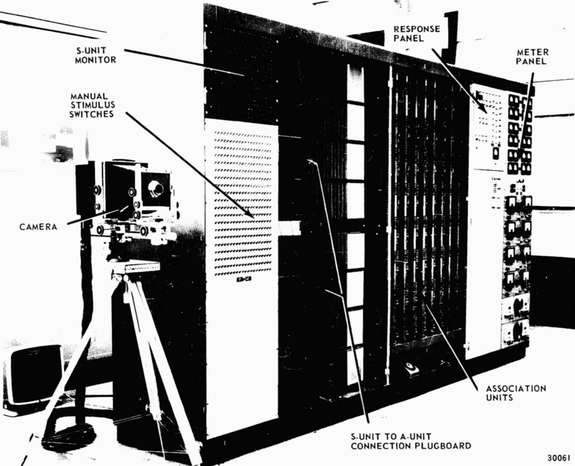
1957年，康奈尔大学的心理学研究助理弗兰克·罗森布拉特（Frank Rosenblatt）开发了一种被称为感知机（Perceptron）的机器学习装置。感知机是一种电子模拟装置，使用马达驱动的电位器来调整权重，通过光电管阵列来接收输入（如字母图像），并根据一种简单的学习规则来调整权重——如果输出正确就不改变，如果输出错误就调整权重以减小错误。
感知机的重要性在于，它是第一个可以从经验中"学习"的人工神经网络。罗森布拉特证明了，如果一组数据是线性可分的——也就是说，可以在输入空间中用一条直线（或超平面）将不同类别完全分开——那么感知机算法一定可以在有限步内找到一个正确的分类器。这个定理被称为感知机收敛定理，它为机器学习提供了第一个严格的理论基础。
感知机的成功引起了媒体的广泛关注。《纽约时报》1958年的一篇报道将感知机描述为"一台电子计算机的雏形，预计它将能够走路、说话、看见、写作、自我复制并意识到自身的存在"。这种过度的 hype 虽然在短期内为AI研究吸引了资金和关注，但也为日后的失望埋下了伏笔。罗森布拉特本人对这种宣传深感不安，他坚持认为感知机只是一个有限的模式识别装置，远非通用智能的实现。
然而，感知机的局限性很快就被揭示出来。1969年，MIT的AI实验室主任马文·明斯基和西摩尔·帕帕特（Seymour Papert）出版了《感知机》（Perceptrons）一书，用严谨的数学方法证明了单层感知机无法解决异或问题（XOR problem）——当两个输入相同时输出0，不同时输出1。异或问题无法用一条直线将两类数据分开，因此超出了单层感知机的能力范围。
明斯基和帕帕特的著作本意是指出多层感知机（即具有隐藏层的神经网络）的研究方向，但在实践中，这本书被广泛解读为对整个神经网络方法的否定。考虑到明斯基在AI界的巨大声望，以及当时可用的计算资源非常有限，大多数研究者放弃了神经网络的研究，转向了符号AI的方向。这一转折开启了长达近二十年的神经网络研究低潮期，被称为"第一次AI寒冬"的序曲。

1964年至1966年间，MIT的计算机科学家约瑟夫·魏泽鲍姆（Joseph Weizenbaum）开发了ELIZA程序——这通常被认为是世界上第一个聊天机器人。ELIZA的核心是一个简单的模式匹配和替换系统：它扫描用户输入的文本，寻找关键词，然后根据预设的规则生成回复。例如，如果用户输入"我感到难过"，ELIZA可能会回复"为什么你感到难过？"——将"我"替换为"你"，并在前面加上"为什么"。
ELIZA最出名的脚本是DOCTOR脚本，模拟一位罗杰斯式的心理治疗师。罗杰斯疗法的特点是治疗师主要通过重复和澄清来访者的话语来引导对话，而不做直接的解释或建议。这种对话方式恰好非常适合模式匹配程序来模拟——因为治疗师不需要真正"理解"来访者的问题，只需要巧妙地重述和提问就可以维持对话的假象。
ELIZA产生的社会反应超出了魏泽鲍姆的预期。许多用户在与ELIZA交谈后产生了强烈的情感反应——他们向这个程序倾诉秘密，寻求建议，甚至产生了依恋之情。魏泽鲍姆的秘书曾请他离开房间，以便她可以"私下"与ELIZA交谈。这种现象后来被称为"ELIZA效应"——人类倾向于将理解和情感投射到表现出对话行为的机器上，即使这些机器完全没有真正的理解能力。
魏泽鲍姆对ELIZA引起的狂热反应深感不安。他原本设计ELIZA是为了研究人机交互中的认知过程，而不是要创造一台"智能"机器。他在1976年出版的《计算机能力与人类理性》一书中强烈批评了AI研究中对人类认知过程的过度简化，警告人们不要赋予计算机不应有的权威，不要让人类自身的判断力被机器所取代。魏泽鲍姆成为AI研究界最著名的批评者之一，他的警告在今天关于AI伦理的讨论中仍然具有强烈的现实意义。
20世纪60年代，AI研究者还开发了其他一些自然语言处理系统。1961年至1965年间，MIT的鲍勃罗（Bobrow）开发了STUDENT程序，可以解决用自然语言表述的代数应用题。例如，给定问题"汤姆的年龄是迪克的两倍，哈里比汤姆大三岁，哈里28岁，迪克多大？"STUDENT能够正确建立方程并求解。STUDENT的成就展示了符号推理在有限领域内的威力，但也暴露了符号方法的局限性——系统对语言的理解仅限于特定类型的句法结构，任何超出预期模式的输入都会导致失败。
1968年至1970年间，MIT的特里·维诺格拉德（Terry Winograd）开发了SHRDLU程序，这是一个在自然语言理解和机器人规划方面取得重大突破的系统。SHRDLU可以理解英语指令，并在一个虚拟的"积木世界"中操作积木来完成任务。用户可以用自然语言命令SHRDLU移动积木、堆叠积木、回答关于积木状态的问题，甚至进行简单的推理。
SHRDLU的成功在当时被认为是AI的重大进步，它展示了在受限领域（"微世界"）中，计算机可以实现相当复杂的语言理解和推理。然而，SHRDLU的局限性也很快暴露出来——它的能力完全依赖于手工编写的语法规则和语义知识，这些规则和知识极其脆弱，无法推广到稍微不同的领域或语言用法。试图将SHRDLU的方法扩展到更复杂、更开放的真实世界时，研究者发现所需的规则数量呈爆炸式增长，系统的性能则急剧下降。这一困境后来被称为知识获取瓶颈（Knowledge Acquisition Bottleneck），成为符号AI面临的核心挑战之一。
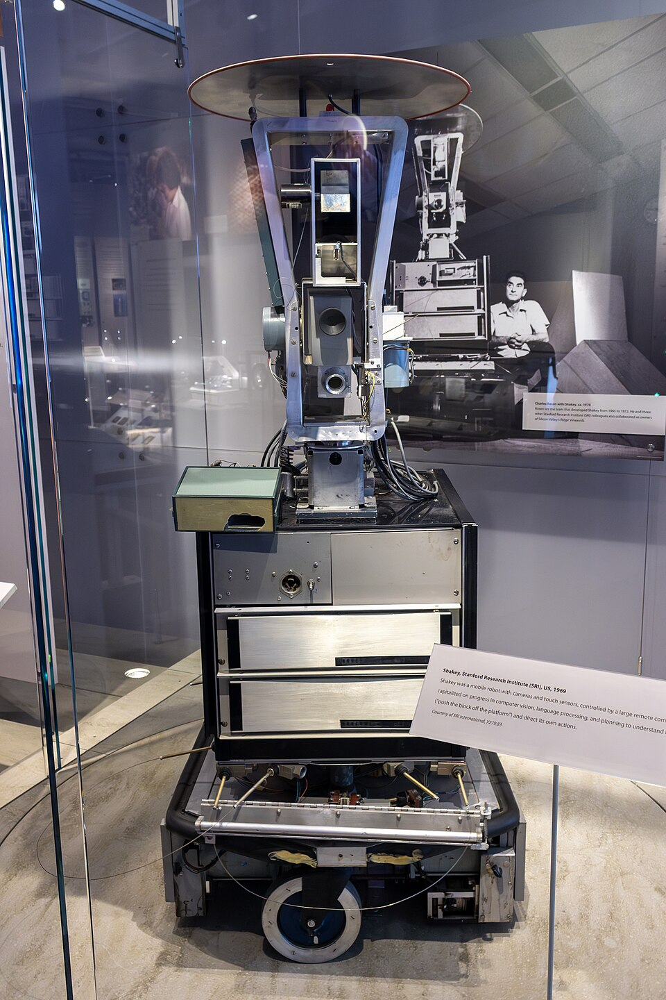
20世纪60年代也是机器人学研究的开端。1966年至1972年间，斯坦福研究所（SRI）的查尔斯·罗森（Charles Rosen）等人开发了Shakey机器人——这是世界上第一个能够自主规划和执行任务的移动机器人。Shakey在一个特殊的房间中移动，房间内布置了几何形状的积木。通过摄像头和触觉传感器感知环境，Shakey可以根据高层目标（如"把绿色积木推到红色积木旁边"）来规划一系列低级动作（移动、转向、推动），并在执行过程中根据传感器的反馈来调整计划。
Shakey的控制系统是分层结构的：底层负责传感器数据处理和基本运动控制，中层负责路径规划和避障，高层负责目标分解和任务规划。这种分层控制架构后来成为机器人学的标准范式。Shakey还首次使用了A*搜索算法——一种在图或网格中寻找最优路径的经典算法，至今仍在广泛应用。
Shakey的运行速度极为缓慢。由于当时计算机处理能力的限制，Shakey完成一个简单的任务可能需要数小时——它的思考和行动速度比人类慢了几个数量级。媒体的报道将Shakey描绘为未来智能机器人的原型，但研究者心里清楚，Shakey的能力与通用智能之间还隔着巨大的鸿沟。然而，Shakey的探索为后来的机器人学和自主系统研究奠定了基础，它首次将感知、规划和行动集成在一个完整的系统中，证明了自主机器人的技术可行性。
1956年至1969年这十余年间，被后人称为AI的"黄金岁月"。这一时期充满了乐观的激情和大胆的预言：
1957年，西蒙预言"在十年之内，一台数字计算机将成为世界象棋冠军，并发现和证明一个重要的数学定理"。1965年，他又预言"在二十年内，机器将能够完成任何人能做的工作"。1970年，明斯基告诉《生活》杂志，"在三到八年内，我们将拥有一台具有普通人一般智能的机器"。这些预言在当时看来并非完全不着边际——毕竟，AI在最初十几年里的进步速度确实令人瞩目。
然而，这些乐观的预言最终都没有实现。国际象棋世界冠军被计算机击败要等到1997年（深蓝击败卡斯帕罗夫）；计算机发现和证明重要数学定理虽然偶有发生，但远未达到通用水平；至于"机器将能够完成任何人能做的工作"，这一目标即使在2026年的今天仍然遥不可及。过度乐观的承诺与缓慢的实际进展之间的落差，最终导致了AI研究资金和声誉的急剧下降——第一次AI寒冬即将来临。
尽管如此，黄金岁月奠定了AI作为一门学科的基础。它建立了AI研究的基本范式和主要分支（搜索、知识表示、自然语言处理、机器人和机器学习），培养了一大批优秀的研究人才，创建了重要的研究机构，并积累了宝贵的技术经验和理论洞见。更重要的是，它确立了一个信念——用机器模拟智能是可能的，这一目标虽然遥远，但值得追求。这一信念在寒冬中未曾熄灭，并在数十年后催发了更加壮丽的AI春天。
"迄今为止，AI领域的任何发现都没有产生当初承诺的重大影响。"——詹姆斯·莱特希尔，1973年
1973年的夏天，一位与应用人工智能毫无关联的数学家提交了一份评估报告，却彻底改变了整个AI领域的命运。这位数学家就是剑桥大学卢卡斯讲座教授詹姆斯·莱特希尔爵士（Sir James Lighthill）——这个教席曾经由艾萨克·牛顿本人执掌。
英国科学研究委员会（SRC）委托莱特希尔对英国大学中的AI研究进行全面评估。莱特希尔在其49页的报告中得出了严厉的结论：AI研究"在任何部分都未能产生当初承诺的重大影响"。他特别批评了AI研究中的"组合爆炸"问题——许多AI算法在问题规模稍大时，计算量会呈指数级增长，使得它们在现实世界中的应用不切实际。莱特希尔还指出，AI研究在机器翻译、语音识别和机器人领域的承诺与实际成果之间存在巨大鸿沟。
莱特希尔报告的影响是迅速而毁灭性的。英国政府几乎立即削减了所有大学（除爱丁堡和萨塞克斯两所外）的AI研究经费。许多实验室被迫关闭或转向其他研究方向，研究者纷纷离开英国前往美国或改行。这场"寒流"很快越过大西洋，美国国防高级研究计划局（DARPA）也在1974年大幅削减了对AI基础研究的资助，转而要求研究者展示更实际的军事应用价值。明斯基后来说，莱特希尔报告"在政治上是一次精妙的一击，它为政府削减被视为投机和无生产力的研究提供了理由"。
今天回望莱特希尔报告，我们可以更客观地评价它的功过。一方面，报告确实指出了AI研究中存在的真实问题——过度承诺、基础理论薄弱、与实际应用的脱节。这些问题是真实存在的，忽视它们只会导致更大的失望。另一方面，莱特希尔的批评也有一些不公之处：他对AI的技术细节缺乏深入理解，低估了基础研究的长期价值，且没有充分认识到研究过程中不可避免的曲折和试错。更糟糕的是，报告的打击面过宽，扼杀了许多有价值的探索性研究，导致AI领域的人才流失和知识断层，其负面影响持续了多年。
莱特希尔报告只是导火索，AI寒冬的深层原因远比一份批评报告更为复杂。
理论局限：早期AI的符号处理方法在面对真实世界的复杂性时暴露了根本性的弱点。符号系统依赖于精确的、人工定义的规则和知识表示，但真实世界充满了模糊性、不确定性和例外。例如，早期的机器翻译项目试图通过语法规则将一种语言翻译为另一种语言，但自然语言的歧义性和上下文依赖性使得这种纯规则方法几乎不可能产生高质量的翻译。1966年美国国家研究委员会发布的一份报告尖锐地批评了机器翻译领域的过度承诺，导致美国政府大幅削减了相关研究的资金——这可以被视为AI寒冬的先兆。
计算能力不足：20世纪70年代的计算机处理能力极为有限。内存以KB计量，CPU速度以MHz计，存储设备昂贵而容量有限。这使得许多在理论上可行的AI算法无法在实际规模的问题上运行。神经网络的训练尤其需要大量计算，当时的硬件完全无法满足需求。
知识获取瓶颈：符号AI系统依赖人类专家手工编写规则和知识，这个过程极其缓慢、昂贵且容易出错。SHRDLU的成功建立在维诺格拉德为积木世界手工编写的大量规则和知识之上，但要为真实世界编写同样详细的知识库，工作量将大到不切实际。研究者发现，获取和编码知识的困难程度远超预期。
感知机批判的影响：明斯基和帕帕特1969年出版的《感知机》虽然本意是指出研究方向，但被广泛解读为对整个神经网络方法的否定。许多研究者放弃了联结主义路线，转向符号AI。然而，符号AI本身也无法解决模式识别和感知等基本问题，这使得AI研究整体上在关键能力上出现了短板。
过度承诺的后坐力：黄金年代的过度乐观预言在未能兑现后，引发了资助机构和公众对AI的普遍不信任。AI从"下一个大事件"变成了"浪费钱的白日梦"，这种负面形象的扭转需要很长时间。
即使在最寒冷的冬天，也有一些研究者在默默坚持。这些"守夜人"的工作虽然当时未受关注，却为后来的复苏埋下了种子。
1975年，约翰·霍兰德（John Holland）提出了遗传算法（Genetic Algorithm）的基本框架。遗传算法模拟自然进化过程中的选择、交叉和变异机制，用来搜索复杂问题的最优解。这一方法后来成为进化计算的核心理论，在优化、机器学习和人工生命等领域产生了广泛影响。
同一时期，计算机视觉领域的开创者之一大卫·马尔（David Marr）在MIT开始了他的视觉计算理论研究。马尔提出，视觉信息处理应该在多个抽象层次上进行——从像素级别的特征提取，到中间层次的几何结构表示，再到高层次的物体识别和场景理解。这种分层处理的思想深刻影响了后来的计算机视觉研究。
在自然语言处理领域，一些研究者开始从纯粹的符号方法转向统计方法。IBM研究中心的弗雷德·杰里内克（Fred Jelinek）在20世纪70年代领导了基于统计模型的语音识别研究，虽然这些早期尝试的成效有限，但它们为后来统计自然语言处理的兴起开辟了道路。
更重要的是，一些研究者并没有放弃对神经网络的探索。虽然单层感知机的能力有限，但多层神经网络的潜力依然存在——只是需要更好的训练算法和更强的计算能力。在日本的福岛邦彦（Kunihiko Fukushima）开发了Neocognitron（1980年），一种模拟视觉皮层层次处理结构的人工神经网络。这个模型包含了多层交错的特征提取层和降采样层，直接启发了后来卷积神经网络的设计。
寒冬中的坚守者人数不多，资金有限，成果也不显赫，但他们的工作保持了AI研究的火种。当条件成熟时，这些火种将重新燃起，照亮AI的新方向。
"在AI中，力量来自于知识库。"——爱德华·费根鲍姆，1977年
20世纪70年代中后期，AI研究找到了一个新的突破口——不再试图构建通用的智能系统，而是专注于特定领域的专家知识。这种被称为专家系统（Expert System）的方法论，带来了AI的第一个商业化春天。
专家系统的基本思想是：如果能够让计算机掌握某个特定领域人类专家的丰富知识和经验，并以规则的形式组织起来，那么计算机就可以在该领域内像专家一样进行推理和决策。这种方法避开了通用AI面临的"常识获取"难题，转而利用"窄而深"的专业知识来实现有用的智能行为。
最早的专家系统之一是DENDRAL，1965年由斯坦福大学的爱德华·费根鲍姆（Edward Feigenbaum）、遗传学家乔舒亚·莱德伯格（Joshua Lederberg）和计算机科学家布鲁斯·布坎南（Bruce Buchanan）合作开发。DENDRAL的任务是根据质谱仪的数据来推断有机化合物的分子结构。费根鲍姆后来被称为"专家系统之父"，他提出了"知识工程"（Knowledge Engineering）的概念，即通过访谈领域专家来获取知识并将其编码为计算机可用的形式。
DENDRAL的成功启发了后续一系列专家系统的开发。其中最著名的是MYCIN（1972-1980），由斯坦福大学的特德·肖特利夫（Ted Shortliffe）开发，用于诊断血液感染病并推荐抗生素治疗方案。MYCIN包含了约600条医学规则，其诊断表现在某些测试中被认为优于许多初级医生。MYCIN引入了确定性因子（Certainty Factor）的概念，用来处理医学推理中的不确定性——当证据不是绝对确定时，系统可以根据置信度进行概率推理。
专家系统的方法论被概括为三个核心组件：知识库（Knowledge Base），存储领域专家的知识，通常以"如果-那么"规则的形式表示；推理引擎（Inference Engine），负责根据知识库中的规则进行逻辑推理，推导出新的事实或结论；用户界面，允许用户输入问题、查看推理过程和解释结论的依据。这种模块化的架构使得专家系统相对容易构建和维护，也为后来的知识管理系统奠定了基础。
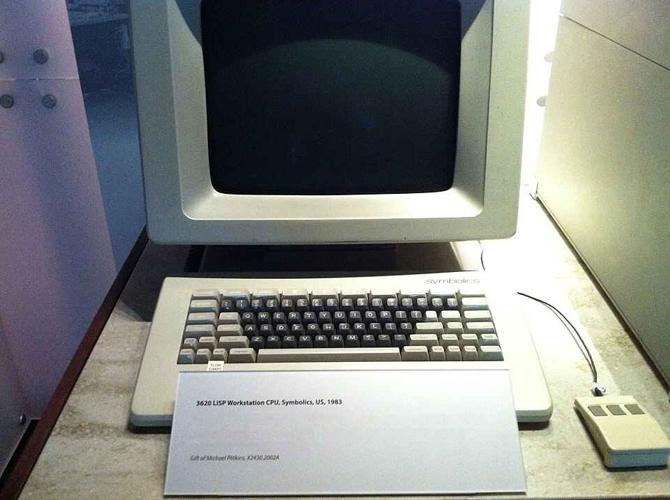
1980年代，专家系统从学术研究走向商业应用，引发了AI的第一次商业化浪潮。1980年，数字设备公司（DEC）部署了XCON（最初称为R1）系统，用于根据客户的订单自动配置VAX计算机系统。XCON包含了约10000条规则，每年为DEC节省约2000万美元的人力成本——因为它替代了原本需要人工完成的复杂配置工作。XCON的商业成功成为专家系统价值的最好证明，各大公司纷纷开始评估和部署专家系统。
专家系统的商业化催生了新的硬件市场。传统的计算机架构不适合运行大量的符号推理，于是专门的Lisp机器（Lisp Machine）应运而生。Symbolics、LMI和Texas Instruments等公司推出了专门运行Lisp程序的高性能工作站，它们拥有特殊的硬件架构来加速符号处理和垃圾回收。Lisp机器在1980年代中期非常热门，售价高达数万美元，购买者包括政府机构、大公司和研究实验室。这一时期还诞生了Prolog语言——一种基于逻辑编程的AI语言，特别适合规则推理。
各国政府也看到了AI的战略价值。1982年，日本政府启动了雄心勃勃的第五代计算机项目（Fifth Generation Computer Project），计划投入850亿日元（约8.5亿美元），开发基于逻辑推理和并行处理的智能计算机。英国紧随其后，推出了Alvey项目来资助本国的AI研究。美国DARPA也重新加大了对AI的投入。全球AI研究经费在1980年代中期达到了前所未有的高峰。
expert系统的应用领域迅速扩展：医学诊断、金融分析、化学合成规划、矿产勘探、设备故障诊断、法律推理……几乎每个需要专业知识的领域都有人尝试构建专家系统。这个时期的热情如此高涨，以至于一些研究者宣称"AI冬天已经过去了"，一个由知识驱动的智能时代正在到来。
然而，专家系统的成功背后隐藏着深刻的危机。最根本的问题来自于知识获取瓶颈——如何将人类专家的知识提取出来，并以计算机可以理解的形式表示？
这个过程比预想的困难得多。人类专家的知识往往大量是"默会知识"（tacit knowledge）——他们"知道怎么做"，但很难清晰地表达"为什么这么做"。当知识工程师试图将这些隐性知识编码为明确的规则时，往往发现规则之间存在矛盾、遗漏和冗余。一个典型的专家系统项目可能需要数年时间和数十人月的努力来构建知识库，且维护和更新同样困难。
更严重的是，专家系统缺乏常识推理和学习能力。一个医学专家系统可能在诊断特定疾病时表现出色，但如果输入的问题超出了它的专业范围，它通常会给出荒谬的回答——因为它不具备任何医学常识。例如，一个系统可能正确诊断出"病人患有肺炎"，但如果你问它"病人被车撞了应该先救哪个"，它可能会回答"先治疗肺炎"。专家系统无法理解问题的语境，也不能从错误中学习改进。
此外，专家系统的脆弱性也是一个严重问题。规则之间可能存在冲突，当规则数量达到数千条时，确保规则库的一致性和完备性变得几乎不可能。推理过程的可解释性虽然在理论上是一个优势，但实际上复杂推理链的解释往往令人费解。当专家系统给出错误结论时，定位和修正错误的根源可能极为困难。
1980年代后期，专家系统的种种问题开始集中爆发。1987年，专门生产Lisp机器的硬件公司纷纷倒闭或转型——Symbolics公司宣告破产，LMI停止运营，Lisp机器市场迅速萎缩。这个曾经被认为是AI硬件未来的产品，由于价格昂贵、用途单一且难以与主流计算平台兼容，最终被通用工作站和个人计算机所取代。
专家系统的投资回报率也开始受到质疑。许多项目耗费了大量资金和时间，但最终未能产生预期的商业效益。知识库的维护成本高昂，系统的适应能力差，难以应对业务环境的变化。一些公司开始削减AI项目的预算，媒体对AI的态度也从热情追捧转向怀疑观望。
第二次AI寒冬（约1987年至1993年）虽然不如第一次那样严酷，但仍然给AI领域带来了重大打击。研究经费减少，初创公司倒闭，研究者再次面临职业困境。人工智能这个词在公众心目中的形象再次变得负面，一些公司甚至避免使用"AI"这个标签，改称"知识系统"或"智能系统"。
然而，第二次寒冬也催生了一些积极的变化。研究者开始反思符号AI的局限性，探索新的方法论。统计方法在语音识别和自然语言处理中的应用逐渐增多。机器学习的概念开始与符号推理分离，成为独立的研究方向。更重要的是，计算机硬件的快速发展——个人计算机性能的提升、互联网的出现、数据存储成本的下降——为新的AI方法准备了必要的物质基础。
在寒冬中，一些新的思想正在悄然萌芽。1986年，一篇划时代的论文重新点燃了人们对神经网络的兴趣。这个被符号AI压制了近二十年的研究方向，即将以"深度学习"的新面貌强势回归，彻底改变人工智能的版图。
"我们是神经网络，我们的任务就是找出神经网络能做什么。"——杰弗里·辛顿，1980年代
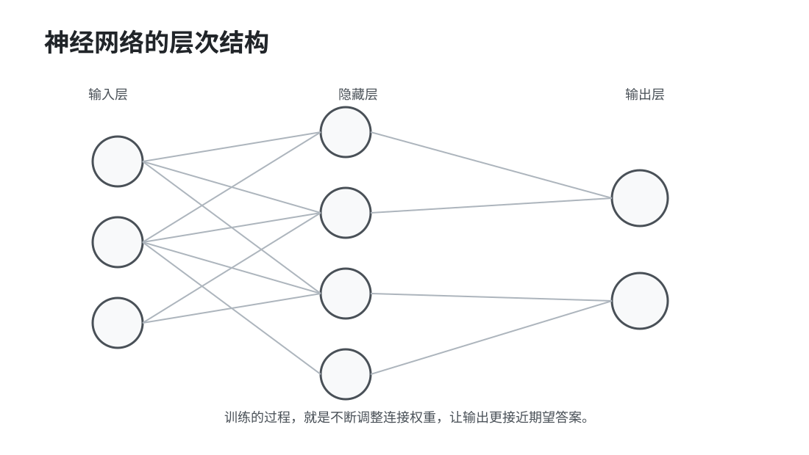
1986年，大卫·鲁梅尔哈特（David Rumelhart）、杰弗里·辛顿（Geoffrey Hinton）和罗纳德·威廉姆斯（Ronald Williams）在《自然》杂志上发表了一篇题为《通过反向传播错误来学习表示》的论文。这篇论文系统地阐述了一种训练多层神经网络的算法——反向传播（Backpropagation），简称"反向传播"或"BP算法"。
反向传播算法的核心思想简单而优雅：当神经网络产生输出时，首先计算输出与期望结果之间的误差；然后，这个误差信息从输出层开始，逐层向输入层"反向传播"，在传播过程中计算每个连接权重对总误差的贡献（即误差对权重的偏导数）；最后，根据这些偏导数来调整权重，使误差减小。这里的梯度可以想象成在山坡上找下山方向：坡越陡，说明往那个方向调整越能减少错误。反向传播则像老师批改错题后，把错误原因一层层分摊回每个解题步骤。通过反复迭代这个过程，网络的性能会逐步改善，直到达到满意的水平。
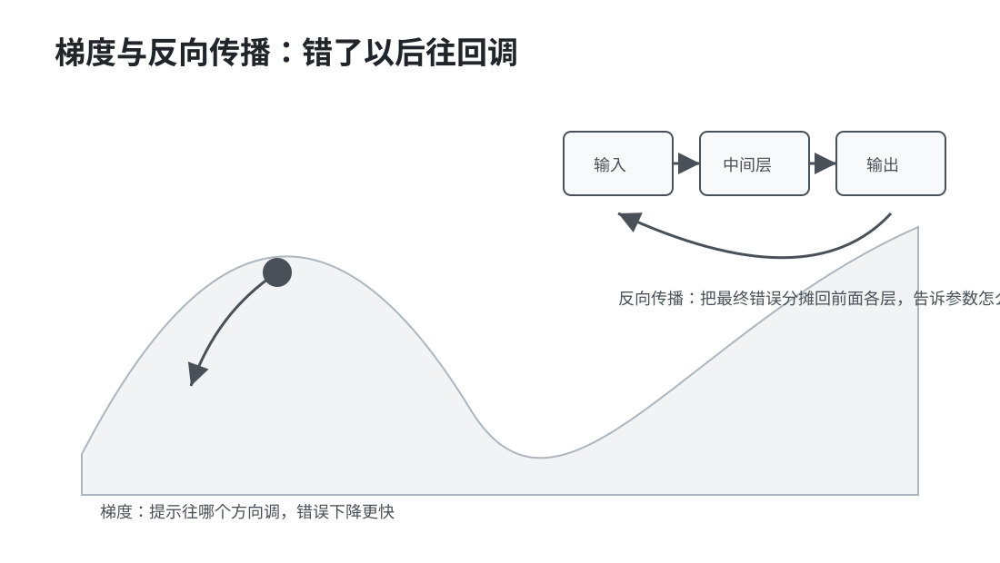
反向传播算法的重要性在于，它解决了训练多层神经网络的核心技术难题。明斯基和帕帕特在1969年指出单层感知机无法解决异或问题，但他们也暗示多层网络可能可以——只要找到有效的训练方法。反向传播正是这种方法。它使得神经网络可以学习非线性的、复杂的输入-输出映射，大大扩展了神经网络的应用范围。
反向传播算法的重新发现（实际上它的基本数学原理早在20世纪60年代就已被提出，但未受重视）引发了神经网络研究的复兴。一个被称为联结主义（Connectionism）或并行分布式处理（Parallel Distributed Processing，PDP）的研究运动兴起，与符号AI形成了鲜明的对立。联结主义者认为，智能不应该基于符号操作和逻辑规则，而应该基于大量简单计算单元（人工神经元）的并行交互。知识不是以符号的形式存储在某个特定位置，而是以分布式的方式编码在网络中无数连接的权重里。
反向传播的复兴激励了一大批年轻研究者投身于神经网络研究。其中，法国研究生扬·勒昆（Yann LeCun）在贝尔实验室做出了特别重要的贡献。1989年，勒昆将反向传播算法应用于一个专门设计用于图像识别的神经网络架构——卷积神经网络（Convolutional Neural Network，CNN）。
卷积神经网络的设计灵感来自于生物视觉系统的结构。早在1962年，神经生理学家大卫·休伯尔（David Hubel）和托斯坦·威塞尔（Torsten Wiesel）通过对猫视觉皮层的研究发现，视觉皮层中的神经元是按层次组织的功能单元：低层神经元对简单的边缘和方向敏感，高层神经元则对更复杂的模式（如角、轮廓）敏感。这一发现后来为勒昆等人设计CNN提供了生物学依据。
CNN的核心创新在于卷积层和池化层的引入。卷积层使用一组可学习的滤波器（也叫卷积核）来扫描输入图像，每个滤波器检测一种特定的局部特征（如水平边缘、垂直边缘、纹理等）。通过在整个图像上滑动这些滤波器，CNN可以有效地检测出各种空间特征。可以把卷积核想象成一只小放大镜，在图片上一格一格移动，寻找边缘、纹理和局部形状；池化层则像把一小块区域做成摘要，保留最重要的线索，丢掉不必要的细节。
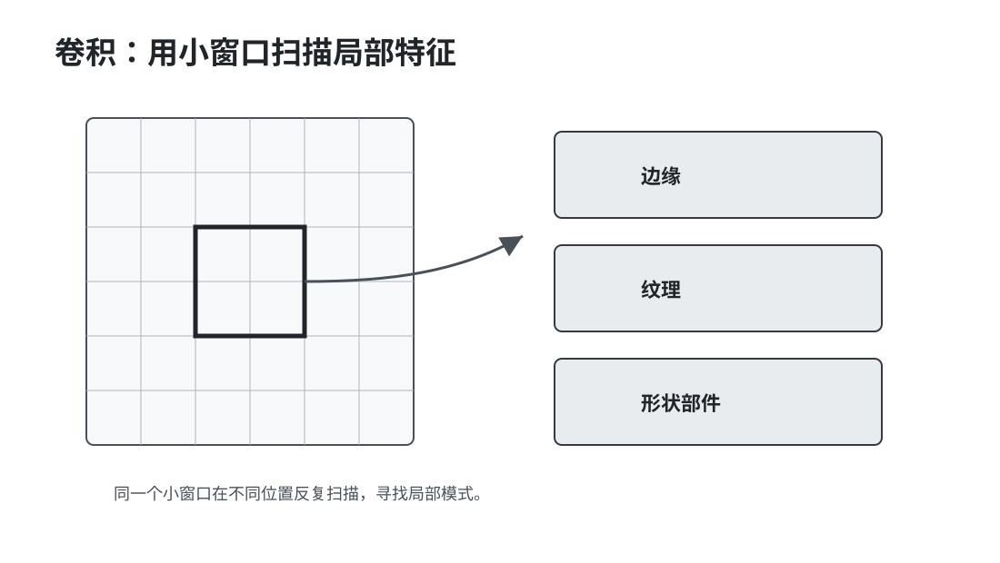
1998年，勒昆等人发表了LeNet-5——一个5层（不计输入层）的卷积神经网络，用于识别手写数字。LeNet-5被成功部署在美国邮政系统中，用于自动读取信封上的邮政编码。这是深度学习历史上的一个标志性事件：神经网络第一次在大规模的商业应用中被证明是可靠的。LeNet-5可以识别约80%的手写数字——虽然不完美，但足以大大减少人工分拣的工作量。
然而，LeNet-5的成功并未引起学界的广泛关注。在1990年代的学术氛围中，神经网络仍然被视为一个"不可靠"和"缺乏理论基础"的方向。支持向量机（SVM）等统计学习方法被认为更加优雅和有效。CNN的潜力被大大低估了——要到2012年AlexNet的出现，世界才真正认识到卷积神经网络的强大威力。
在神经网络复兴的浪潮中，英国认知心理学家和计算机科学家杰弗里·辛顿（Geoffrey Hinton）扮演了核心角色。辛顿对神经网络的热情始于他在剑桥大学攻读实验心理学博士学位期间。他对大脑如何工作深感兴趣，并逐渐相信人工神经网络是理解智能本质的最佳途径。
1982年，辛顿在加州大学圣地亚哥分校做博士后期间，与大卫·鲁梅尔哈特和詹姆斯·麦克莱兰德（James McClelland）等人合作，共同编辑了《并行分布式处理：认知微观结构的探索》两卷本论文集。这套书成为联结主义运动的"圣经"，系统阐述了用神经网络建模认知过程的哲学和方法论。辛顿还参与了反向传播算法的复兴研究，是1986年那篇里程碑论文的主要作者之一。
然而，20世纪90年代对神经网络研究者来说是艰难的十年。尽管反向传播算法在理论上很优美，但实际应用中存在许多问题：训练深层网络时梯度会消失或爆炸，导致学习效果不佳；网络容易过拟合训练数据，泛化能力差；训练过程需要大量数据和计算资源，而当时这两者都很稀缺。过拟合就像学生把练习册答案背下来了，遇到原题很厉害，题目稍微变一下就不会做。随着支持向量机等替代方法的兴起，神经网络研究再次陷入了低谷。
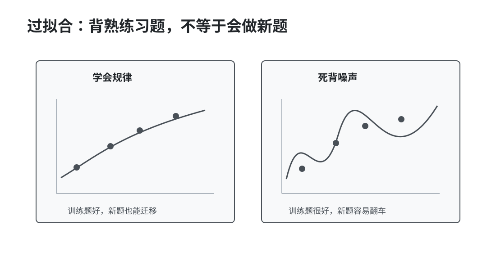
辛顿在这段时间里始终坚持自己的信念。他先后在多伦多大学和Google工作，持续探索改进神经网络训练的方法。他发展了玻尔兹曼机（Boltzmann Machine）和受限玻尔兹曼机（Restricted Boltzmann Machine，RBM），为无监督学习和特征学习提供了新的工具。2006年，辛顿发表了一篇关键论文，提出使用贪婪逐层预训练（Greedy Layer-wise Pretraining）的方法来初始化深度网络的权重，有效缓解了深度网络训练中的梯度消失问题。这篇论文被广泛认为是深度学习（Deep Learning）时代的开端。
辛顿的坚持和远见最终得到了回报。2012年，他的学生Alex Krizhevsky使用深度卷积神经网络AlexNet赢得了ImageNet图像识别竞赛，将错误率从26.2%骤降至15.3%。这一突破震惊了整个计算机视觉领域，也标志着深度学习革命的开始。2018年，辛顿与勒昆和约书亚·本吉奥（Yoshua Bengio）共同获得了图灵奖，以表彰他们在深度学习领域做出的突破性贡献。
"支持向量机是我们在模式识别领域见过的最好的东西。"——研究者评价，1990年代
20世纪90年代，当神经网络研究陷入低谷时，另一种机器学习方法迅速崛起并占据了主导地位——支持向量机（Support Vector Machine，SVM）。
SVM的核心思想由苏联数学家弗拉基米尔·万普尼克（Vladimir Vapnik）在1963年首次提出，但直到1990年代才在实际应用中展现出强大的威力。SVM本质上是一种分类算法：给定一组带有标签的训练数据，SVM试图找到一个最优的超平面，将不同类别的数据点最大程度地分开。这里的"最优"指的是：不仅要求超平面能够正确分类训练数据，还要求它到最近的数据点（即"支持向量"）的距离最大——这种最大化间隔的策略使得SVM具有良好的泛化能力。
SVM的一个重要创新是核技巧（Kernel Trick）。对于线性不可分的数据（如异或问题），SVM通过核函数将数据映射到一个高维特征空间，在这个高维空间中数据可能变成线性可分的。常用的核函数包括多项式核和高斯核（也称RBF核），它们可以在不显式计算高维映射的情况下，直接计算数据点在高维空间中的内积，从而大大提高了计算效率。
SVM在1990年代取得了广泛的成功：在手写数字识别、文本分类、生物信息学等领域，SVM通常能够提供最好的分类性能。它有坚实的数学理论基础，训练过程是一个凸优化问题，保证能找到全局最优解——这与神经网络的训练过程形成对比，后者的损失函数通常是非凸的，训练结果可能陷入局部最优。SVM还具有良好的泛化理论保证，可以通过结构风险最小化原则来控制模型的复杂度。
然而，SVM也有其局限性：它本质上是针对分类任务设计的，扩展到其他任务（如回归、序列标注）虽然可行但不够自然；核函数的选择和参数调优需要经验；对于大规模数据集，训练时间可能很长；最重要的是，SVM是一种"浅层"方法——它直接将输入映射到输出，没有中间的特征层次结构。对于图像和语音等复杂数据，SVM需要依赖人工设计的特征提取器，而无法自动学习数据的层次化表示。
20世纪90年代中后期，互联网开始席卷全球，为机器学习的发展带来了两个革命性的变化：海量的数据和前所未有的计算资源。
1990年代初期，互联网还是一小部分研究人员和政府机构的专属工具。但到了90年代中期，万维网（World Wide Web）的普及使互联网进入了大众视野。网页数量呈指数级增长，用户每天都在产生海量的文本、图像和交互数据。这些数据为机器学习算法提供了前所未有的训练素材——传统的小规模、人工整理的数据集已经无法满足需求，自动化地从互联网获取和处理数据成为新的研究范式。
与此同时，计算机硬件的性能持续提升，价格则不断下降。摩尔定律——每18个月晶体管数量翻一番——在20世纪90年代仍然有效。个人计算机的处理能力越来越强，使得以前只能在大型机上运行的算法现在可以在桌面上运行。更重要的是，图形处理器（GPU）的发展为大规模并行计算提供了新的可能性。GPU最初是为图形渲染设计的，拥有大量简单的处理核心，可以同时执行数千个线程——这种架构恰好适合神经网络中的矩阵运算。
大规模数据与强大计算能力的结合，使得一些以前不可行的方法变得可能。统计语言模型可以训练在数十亿词的语料库上，从而获得前所未有的语言理解能力。数据挖掘技术可以从海量的商业交易数据中发现有价值的模式。推荐系统可以根据用户的历史行为来预测其兴趣。机器学习开始从学术研究走向工业应用，成为互联网公司的核心技术之一。
1990年代也是自然语言处理从符号方法转向统计方法的关键时期。传统的基于规则的NLP方法——手工编写语法规则、词典和知识库——在实践中遇到了知识获取瓶颈和规则冲突等难以克服的困难。统计方法提供了一种替代方案：不再试图手工编写语言规则，而是从大规模语料库中自动学习语言的统计规律。
IBM研究中心的研究者在这一转型中发挥了先锋作用。弗雷德·杰里内克领导的团队开发了基于统计模型的语音识别系统，用隐马尔可夫模型（HMM）来建模语音信号的时序特性。虽然早期系统的识别准确率不高，但随着训练数据的增加和模型的改进，统计方法逐渐超越了基于模板的方法。在机器翻译领域，IBM的彼得·布朗（Peter Brown）等人提出了统计机器翻译（Statistical Machine Translation，SMT）方法。不再依赖人工编写的语法转换规则，SMT系统从大量平行语料（同一文本的两种语言版本）中学习翻译模型——哪些源语言词组对应哪些目标语言词组，以及它们在不同上下文中的翻译概率。
统计NLP的成功在20世纪90年代末和21世纪初达到了高峰。1997年，Google搜索引擎上线，其核心技术之一就是基于统计的网页排序算法（PageRank）和文本检索模型。2000年代初期，统计机器翻译系统开始在实际的翻译服务中得到应用。基于统计的语言模型成为语音识别和光学字符识别（OCR）系统的标准组件。
然而，统计方法也有其固有的局限性。基于统计的语言模型虽然可以捕捉词语之间的共现关系，但它们对语言的深层结构和语义理解仍然非常有限。统计机器翻译虽然比基于规则的方法更加鲁棒，但翻译质量仍然远不及人工翻译，尤其在处理长距离依赖和复杂句法结构时表现不佳。统计方法的这些局限性，暗示着需要更加强大的模型来真正理解语言——这个需求最终将推动深度学习和神经网络的全面复兴。

1997年5月11日，一个历史性的时刻降临在纽约的一间棋牌室里。IBM的深蓝超级计算机（Deep Blue）在六局国际象棋比赛中，以3.5比2.5的总比分击败了世界象棋冠军加里·卡斯帕罗夫（Garry Kasparov）。这是计算机第一次在国际象棋领域战胜了在任世界冠军，标志着AI发展史上的一个重要里程碑。
深蓝的成功并非依靠优雅的算法或类人的智能，而是暴力搜索的力量。深蓝是一台专门设计的超级计算机，拥有30个IBM RS/6000 SP处理芯片和480个定制VLSI国际象棋芯片，可以在每秒钟评估约2亿个棋局位置。它使用alpha-beta剪枝算法来搜索可能的走法树，配合由国际象棋大师团队手工调优的评估函数来判断每个位置的优劣。
深蓝的胜利在公众中引起了巨大轰动。这是AI研究40年来最引人注目的成就之一，也是AI第一次在一个被广泛认为是人类智力巅峰领域的竞赛中战胜世界冠军。然而，深蓝的 victory 在AI研究界引发的反思多于欢呼。许多研究者指出，深蓝的方法与"真正的智能"相去甚远——它依靠的是巨大的计算能力和精确的领域知识，而不是通用的问题解决能力。卡斯帕罗夫在比赛后抱怨说，他有时候感觉深蓝背后仿佛有一个"人类团队在帮助他"，因为计算机的走法显示出超人的计算精确性和在某些时刻的"创造性"。
无论评价如何，深蓝的胜利具有重要的历史意义。它证明了计算机可以在复杂的智力竞赛中超越最优秀的人类，这为后来的AI研究提供了强大的动力。它也引发了关于AI本质的深刻讨论：什么是"真正的"智能？是通过图灵测试、在比赛 中战胜人类、还是展现出类人的理解和创造力？这些问题至今仍在争论之中。
"这是深度学习的时代。"——杰弗里·辛顿，2012年
2009年，斯坦福大学的计算机科学家李飞飞（Fei-Fei Li）发布了ImageNet数据集——这是一个超大规模的图像数据库，包含了超过1400万张被标注的图像，涵盖约22000个类别。ImageNet的创建是为了解决一个长期困扰计算机视觉领域的问题：现有的数据集规模太小，无法训练和评估真正强大的视觉识别系统。李飞飞团队利用亚马逊的Mechanical Turk众包平台，邀请了来自167个国家的近5万名标注者来标记图像。
从2010年开始，李飞飞团队每年举办一次ImageNet大规模视觉识别挑战赛（ILSVRC），参赛者需要使用他们的算法来自动识别和分类图像。在前两届比赛中（2010年和2011年），获胜方法的 top-5 错误率（即模型给出的5个最高概率答案中至少有一个正确的比例）分别为28%和26%——这些结果虽然比随机猜测好很多，但远未达到实用水平。参赛者使用的方法大多是手工设计特征（如SIFT、HOG）加传统分类器（如SVM）的组合，性能提升缓慢。
2012年9月30日，一切都改变了。多伦多大学的Alex Krizhevsky、Ilya Sutskever和Geoffrey Hinton提交了一个基于深度卷积神经网络的模型——AlexNet，以惊人的15.3%的 top-5 错误率赢得了比赛，比第二名（使用传统方法的26.2%）低了超过10个百分点。AlexNet的成功是压倒性的、革命性的，整个计算机视觉领域为之震惊。
AlexNet的成功不是偶然的，而是多种因素汇聚的结果。首先，AlexNet采用了比之前更深的网络架构——8层（5个卷积层加3个全连接层），而之前的神经网络通常只有2到3层。更深的网络意味着更强的表达能力，可以学习到更复杂的特征层次。其次，AlexNet使用了两块NVIDIA GTX 580 GPU进行并行训练。GPU的大规模并行计算能力使得训练深层网络在时间上变得可行——如果没有GPU，训练AlexNet可能需要数月甚至数年。第三，AlexNet使用了一些关键的技术创新：ReLU激活函数（避免了传统sigmoid函数的梯度消失问题）、Dropout正则化（有效防止过拟合）和数据增强（通过对训练图像进行随机变换来扩充数据集）。
最深刻的变革在于：AlexNet证明了深度学习可以自动学习特征，而不需要人工设计。传统计算机视觉方法的核心是手工设计特征描述子——研究者花费大量时间思考什么样的特征（边缘、角点、纹理等）对于识别任务有用。而AlexNet直接从原始像素出发，通过多层卷积自动学习层次化的特征表示：低层学习边缘和颜色，中层学习纹理和形状，高层学习物体的部件和整体结构。这种端到端的学习范式彻底改变了计算机视觉的研究方法论。
AlexNet的成功像一颗火种，迅速点燃了整个深度学习领域。此后的几年间，深度学习在几乎所有AI子领域都取得了突破性进展：
语音识别：2012年前后，深度学习开始取代传统的隐马尔可夫模型（HMM）和高斯混合模型（GMM），成为语音识别的主流技术。谷歌、微软和百度等公司相继发布了基于深度神经网络的语音识别系统，错误率相比传统方法下降了30%以上。到2016年，深度学习语音识别的准确率已经可以与人类相媲美，在专业术语和嘈杂环境下甚至超过人类。
自然语言处理：2013年，托马斯·米科洛夫（Tomas Mikolov）在谷歌发布了Word2Vec模型，可以用密集的实数向量来表示词语的语义。Word2Vec基于一个简单的神经网络架构（只有一个隐藏层），通过预测词语的上下文来学习词向量。它揭示了词语之间的语义关系可以在向量空间中体现出来——例如，"国王-男人+女人≈王后"。Word2Vec为NLP的深度学习化铺平了道路，证明了神经网络可以学习到有意义的语言表示。
机器翻译：2014年，深度学习开始应用于机器翻译。谷歌的研究者提出了基于编码器-解码器架构的神经机器翻译（NMT）系统。编码器将源语言句子压缩为一个固定长度的向量表示，解码器则从这个向量生成目标语言的翻译。虽然早期的NMT系统存在一些问题（如长句翻译质量差），但它们的整体质量很快超过了统治机器翻译领域二十年的统计机器翻译方法。
生成对抗网络：2014年，当时还在蒙特利尔大学攻读博士学位的伊恩·古德费洛（Ian Goodfellow）提出了生成对抗网络（Generative Adversarial Network，GAN）的概念。GAN由两个神经网络组成：一个生成器（Generator），试图创建看起来像真实数据的假样本；一个判别器（Discriminator），试图区分真实样本和生成器产生的假样本。这两个网络在对抗训练中相互促进，最终生成器可以产生以假乱真的新数据。GAN开启了AI生成内容（AIGC）的新纪元，后来被广泛应用于图像合成、风格迁移、超分辨率、文本到图像生成等领域。
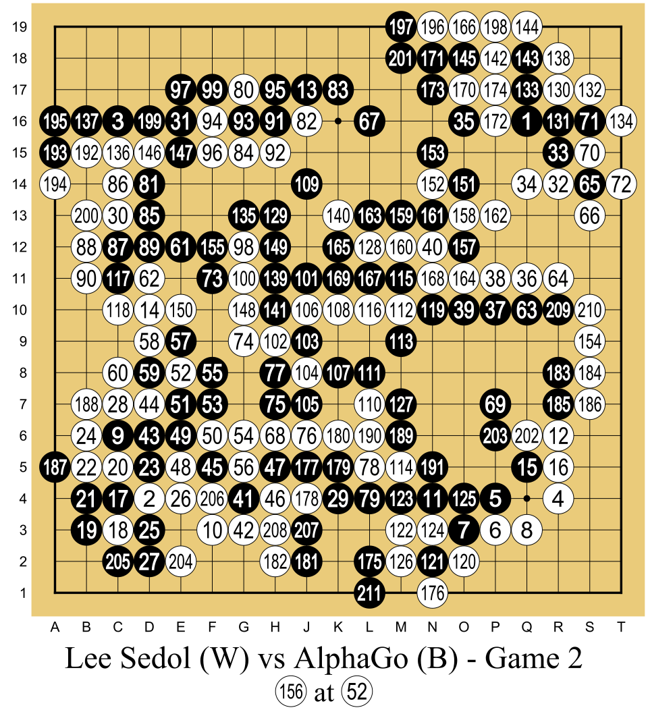
2016年3月，在韩国首尔的一家酒店里，一场举世瞩目的人机大战正在进行。Google DeepMind开发的AlphaGo人工智能系统正在与世界围棋冠军李世石（Lee Sedol）进行五局三胜制的对弈。围棋，这个起源于中国、有着3000多年历史的策略棋类游戏，长期以来被视为人类智力竞技的巅峰——它的复杂度远超国际象棋，棋盘上有361个交叉点，可能的棋局数量超过了宇宙中的原子总数。许多人认为，计算机要在围棋上战胜人类顶尖高手，至少还需要十年时间。
然而，AlphaGo以4比1的比分击败了李世石。比赛中最令人难忘的是第二局的第37手——AlphaGo下出了一步完全出乎所有人意料的落子，这步棋如此"反直觉"，以至于现场的围棋评论员起初以为这是程序出错了。但一百多手之后，这步棋的战略价值才完全显现出来——它为AlphaGo最终的胜利奠定了基础。李世石赛后评论说，AlphaGo的这一步棋"不是人类会下的棋"。这种超越人类专家认知局限的创造性策略，让人们第一次真切地感受到AI可能拥有的"创造力"。
AlphaGo的技术架构融合了三种关键技术：深度卷积神经网络——用于评估棋局的优劣和选择可能的下法；强化学习——通过自我对弈来不断提升棋力；蒙特卡洛树搜索（MCTS）——在巨大的搜索空间中高效地探索最优走法。强化学习可以想象成在游戏中试动作：做得好得分，做差扣分，系统逐渐学会哪些策略更有利；但如果奖励设计错了，它也可能学到偏离目标的办法。AlphaGo首先通过分析数百万人类棋谱来训练神经网络（监督学习阶段），然后通过自我对弈来进一步优化策略（强化学习阶段）。在训练过程中，AlphaGo生成了数千万盘自我对弈的棋局，积累了远超任何人类棋手可以企及的经验。
AlphaGo的胜利具有深远的科学意义和文化影响。它证明了深度学习和强化学习的组合可以解决极其复杂的策略问题，而这些问题在以前被认为是对AI的终极考验。它引发了全球范围内对AI潜力的热烈讨论，各国政府和企业纷纷加大对AI研究的投入。更重要的是，AlphaGo展示了AI可以在一个充满直觉和创造力的领域中超越最优秀的人类——这迫使人们重新思考什么是"智能"，什么是"创造力"，以及人类智能的独特价值究竟在哪里。
AlphaGo之后，DeepMind继续推进其技术。AlphaGo Zero（2017年）完全放弃了人类棋谱，只通过自我对弈就达到了超越之前版本的棋力，证明了"从零开始学习"的可行性。AlphaZero（2017年）进一步将这种学习方法推广到国际象棋和日本将棋，仅用数小时的自我训练就超越了统治这些领域数十年的专用引擎。这些成果展示了通用学习算法的潜力，为AGI（通用人工智能）的研究提供了有价值的启示。
深度学习革命的幕后功臣之一是图形处理器（GPU）的快速发展。GPU最初是为计算机图形渲染设计的专用芯片，拥有大量简单的处理核心，可以同时执行成千上万个并行计算线程。这种架构与神经网络训练的矩阵运算需求高度契合——训练神经网络的核心操作是大规模矩阵的乘法和卷积，恰好可以在GPU的并行架构上高效执行。
NVIDIA公司是这一变革的最大推动者。2006年，NVIDIA推出了CUDA（Compute Unified Device Architecture）编程平台，使开发者可以用C语言来编写在GPU上运行的通用计算程序。这一举措将GPU从专用图形芯片转变为通用并行计算加速器，为深度学习的发展提供了关键的硬件基础。2012年AlexNet使用两块GTX 580 GPU来训练其深度网络，开启了GPU+深度学习的黄金时代。
此后，NVIDIA不断推出性能更强的GPU产品，并针对深度学习的需求进行了专门优化。2016年发布的Tesla P100、2017年的Tesla V100、2020年的A100和2022年的H100，每一代产品的计算性能都比前一代有数倍提升。NVIDIA还开发了cuDNN、TensorRT等深度学习加速库，进一步提高了GPU上训练和推理的效率。
GPU计算的普及彻底改变了AI研究的格局。以前只能在大型机构拥有的超级计算机上运行的实验，现在小公司甚至个人研究者用几块GPU就能完成。这极大地降低了AI研究的门槛，加速了创新的步伐。与此同时，对GPU的巨大需求也推动了NVIDIA公司的市值从2012年的约100亿美元飙升至2024年的超过3万亿美元，使其一度成为全球市值最高的公司之一。
"注意力就是你所需要的一切。"——Transformer论文标题，2017年
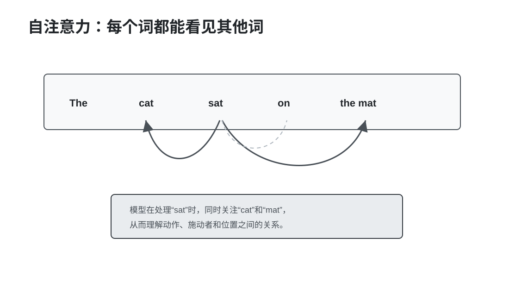
2017年6月，谷歌大脑（Google Brain）团队发表了一篇题为《注意力就是你所需要的一切》（Attention Is All You Need）的论文，提出了一种全新的神经网络架构——Transformer。这篇论文后来被认为是深度学习历史上最具影响力的论文之一，因为它彻底改变了自然语言处理（NLP）的面貌，并为后来的大语言模型（LLM）浪潮奠定了技术基础。
在Transformer之前，NLP领域的主导架构是循环神经网络（RNN）及其变体——特别是长短期记忆网络（LSTM）和门控循环单元（GRU）。RNN通过维护一个隐藏的"状态向量"来处理序列数据（如句子），理论上可以捕捉序列中的长距离依赖关系。然而，RNN存在两个根本性的问题：一是顺序处理——句子中的每个词必须依次处理，无法并行计算，导致训练速度缓慢；二是长距离依赖困难——当序列很长时，早期的信息在传递到后期时会被逐渐稀释或遗忘，模型难以捕捉到相距较远的词之间的关系。
Transformer通过一种全新的机制——自注意力（Self-Attention）——解决了这些问题。自注意力机制允许模型在处理序列中的每个位置时，直接"关注"到序列中的所有其他位置，并自动学习这些位置之间的关联强度。可以把它想象成读句子时用荧光笔把相关词连起来：比的不是"模型有意识地专注"，而是每个词会给上下文中的其他词分配不同的重要程度。例如，在翻译句子"The cat sat on the mat"时，模型在处理"sat"这个词时，可以通过自注意力机制同时考虑到"cat"（施动者）和"mat"（位置），从而准确理解整个句子的结构。
自注意力的核心计算是：将输入序列的每个元素转换为三个向量——查询（Query）、键（Key）和值（Value）；然后通过计算查询与所有键之间的相似度（通常使用点积），得到一组注意力权重；最后将这些权重与对应的值相乘并求和，得到该位置的输出表示。这个过程对所有位置同时进行，意味着整个序列可以在一步之内完成处理——这是RNN无法做到的完全并行化。
Transformer的架构由编码器（Encoder）和解码器（Decoder）两部分组成。编码器负责将输入序列转换为连续的特征表示，解码器则根据这些表示生成输出序列。每个编码器和解码器层都包含自注意力子层和前馈神经网络子层，并通过残差连接和层归一化来稳定训练。
Transformer在机器翻译任务上展现了卓越的性能，同时训练速度比基于RNN的模型快了数倍。更重要的是，它为后来的研究指明了一个方向：通过扩大模型规模和训练数据，可以持续提升模型性能。
Transformer架构诞生后，迅速催生了两大系列的预训练语言模型，分别代表了NLP的两种不同范式：
BERT（Bidirectional Encoder Representations from Transformers）由谷歌在2018年10月发布。BERT仅使用Transformer的编码器部分，通过两个预训练任务来学习语言的深层表示：掩码语言模型（Masked Language Model，MLM）——随机遮挡输入句子中的一些词，让模型预测被遮挡的词是什么；以及下一句预测（Next Sentence Prediction，NSP）——判断两个句子是否是连续的。BERT的关键创新在于双向编码——在处理每个词时，模型可以同时利用该词左侧和右侧的上下文信息。
BERT的预训练-微调范式取得了惊人的成功：在11个NLP基准测试中，BERT都取得了当时的最优成绩，涵盖问答、情感分析、命名实体识别、文本蕴含等多个任务。BERT的成功催生了大量变体模型（如RoBERTa、ALBERT、DistilBERT等），并使得"预训练+微调"成为NLP的标准方法论。预训练像先大量阅读，建立通用语感和背景知识；微调像上岗前做专项培训，让模型适应问答、分类、摘要等具体任务。
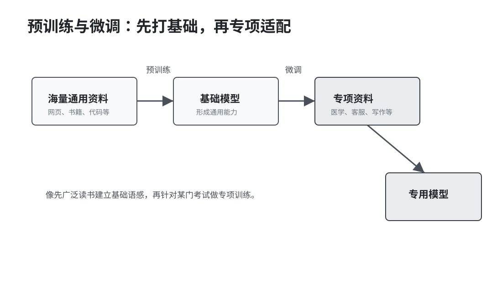
GPT（Generative Pre-trained Transformer）系列则由OpenAI开发，走了一条不同的路线。GPT仅使用Transformer的解码器部分，采用自回归（Autoregressive）的方式进行训练——给定一个序列的前缀，模型预测下一个词应该是什么。这种训练方式使得GPT特别擅长生成连贯的文本：给它一个开头，它就可以不断生成后续的词语，形成完整的段落、文章甚至故事。
2018年6月发布的GPT-1拥有1.17亿参数，虽然在当时不算特别大，但已经展示了生成式预训练的潜力。这里的参数可以粗略理解为模型内部的"调音台旋钮"：它们不是一条条知识，也不是用户能手动逐个调整的开关，而是大量影响输出结果的数字状态。训练模型的过程，就是不断调整这些旋钮，让模型的回答更接近目标。2019年2月，OpenAI发布了GPT-2，参数量扩大到15亿。GPT-2生成的文本质量之高，让OpenAI起初决定不公开完整的模型——他们担心这项技术可能被滥用（如生成假新闻）。这一决定引发了关于AI研究和开放的激烈争论。2020年5月，OpenAI最终发布了完整的GPT-2模型，并着手开发更大的模型。
2020年6月，OpenAI发布了GPT-3——一个拥有1750亿参数的语言模型，是当时最大的语言模型，比之前最大的模型大了10倍以上。GPT-3的训练使用了约5000亿词的数据（主要来自互联网网页、书籍和维基百科），训练成本估计约为500万美元——在当时是一笔巨额投资。
GPT-3展现出了一些前所未有的能力，被研究者称为涌现能力（Emergent Abilities）——这些能力在较小规模的模型中不存在，只有当模型大到一定程度时才会"涌现"出来。最引人注目的涌现能力是上下文学习（In-context Learning）：不需要对模型进行任何参数更新，只需要在提示（prompt）中给出几个示例，GPT-3就能够理解任务的要求并完成新实例。例如，给GPT-3展示几个"将英语翻译成法语"的示例后，它就能够正确地翻译新的英语句子——即使这个翻译任务从未在训练数据中明确出现过。
GPT-3还展现了令人印象深刻的代码生成能力。给它一个自然语言描述的任务，它往往能够生成相应的Python、JavaScript或其他编程语言的代码。它可以根据提示续写文章、创作诗歌、回答问题、进行简单推理，甚至进行一些创造性的写作。当然，GPT-3也存在明显的问题：它会"幻觉"（hallucinate）——自信地生成看似合理但实际上错误的内容；它的推理能力有限，在需要多步逻辑推导的问题上经常出错；它可能生成带有偏见或不当内容。
GPT-3的成功引发了一场"大模型竞赛"。谷歌发布了Switch Transformer（1.6万亿参数）和PaLM（5400亿参数）；微软和NVIDIA合作发布了Megatron-Turing NLG（5300亿参数）；中国的智源研究院发布了悟道2.0（1.75万亿参数）。"规模就是一切"（Scale is all you need）成为这一时期AI研究的流行口号——不断增加模型参数量和训练数据量，似乎总能带来性能的提升。
然而，这种"暴力缩放"的方法也引发了越来越多的质疑。训练和运行大模型需要巨大的计算资源和能源消耗，对环境造成了不可忽视的影响。大模型的"黑箱"特性使得理解它们的决策过程变得困难，带来了可解释性和安全性的挑战。此外，一味追求参数量的竞赛可能掩盖了算法创新和理论理解的重要性。这些问题的反思，推动了后来更加高效和可持续的AI研究方向的发展。
2010年代后期，AI研究的另一个重要趋势是多模态学习——训练模型来同时理解和生成多种类型的数据（文本、图像、音频、视频等）。如果单一模态像只读文字，多模态就像一个学生同时能读文字、看图片、听声音，再把这些信息合在一起判断。它强调的是跨信息类型的整合能力，但并不等于模型真的像人一样理解世界。这个方向的先驱之一是OpenAI的CLIP（Contrastive Language-Image Pretraining），2021年发布。CLIP通过对比学习的方式，在一个巨大的数据集（4亿对图像-文本对）上训练了一个联合的文本-图像表示空间。CLIP可以将图像和文本映射到同一个语义空间，使得模型能够理解图像的内容并用自然语言来描述它。
CLIP的出现催生了一系列"文本到图像"生成模型。OpenAI的DALL-E（2021年）可以根据自然语言描述生成相应的图像。随后，Google的Imagen、Parti，Stability AI的Stable Diffusion，以及Midjourney等产品不断刷新图像生成的质量和速度。2022年，Stable Diffusion的开源发布使得高质量的AI图像生成变得人人可及，引发了艺术创作、设计和娱乐行业的深刻变革。
在视频生成领域，OpenAI的Sora（2024年发布）展示了令人震惊的能力：可以根据文本描述生成长达一分钟的高清视频，视频中包含复杂的场景、人物动作和物理交互。Sora的出现被视为AI向"世界模拟器"（World Simulator）迈进的重要一步——它表明AI不仅可以理解和生成静态的内容，还能够模拟动态世界的规律。
这些多模态模型的进步，标志着AI正在从专门处理单一数据类型的"窄AI"，向能够整合多种信息来源、理解和模拟复杂世界的"通用AI"方向迈进。虽然距离真正的通用人工智能还有很长的路要走，但多模态学习无疑是通往这一目标的关键一步。
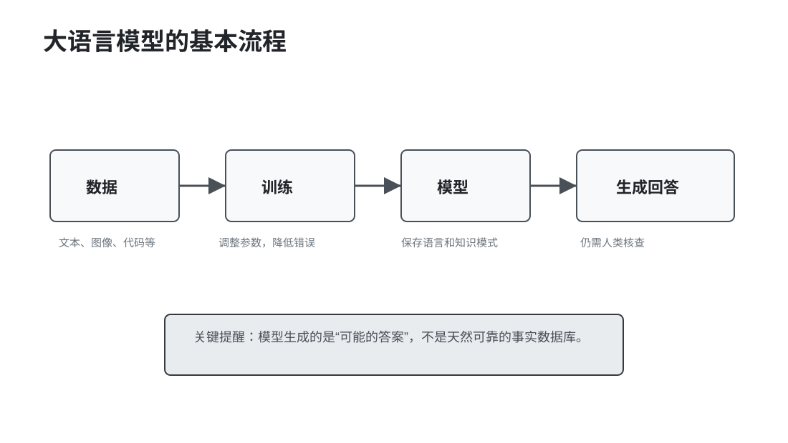
理解AI，不必先学会写代码；先理解它在用什么材料、按什么方式学习、为什么会犯错。
早期AI常常像一本巨大的规则手册。工程师把专家知识写成"如果……那么……"的形式，例如："如果病人发烧并且白细胞升高，那么考虑感染。"这种方式在规则明确、场景稳定的任务中很有效，但一旦遇到真实世界的复杂情况，规则数量会迅速膨胀，维护成本也会变得很高。
机器学习改变了思路。与其让人把所有规则写出来，不如让机器从大量样本中自己寻找规律。比如给模型看成千上万张猫和狗的照片，并告诉它每张图的正确标签，模型会逐渐学会哪些图像特征更可能代表猫，哪些更可能代表狗。这个过程有点像学生做大量练习题，然后根据标准答案不断订正：比的是"通过反馈调整表现"，不是说模型像人一样理解老师的批改意见。这里的关键不再是人工写规则，而是准备数据、设计模型、定义目标，并让计算机反复调整内部参数。
数据模型学习的材料。文本、图片、音频、视频、传感器记录都可以成为数据。
模型一种可调节的数学结构。它接收输入，产生输出。
训练让模型不断比较自己的答案和标准答案，像反复订正练习一样逐步调整内部参数。
推理训练完成后，模型根据新的输入给出回答、判断或生成内容。
大语言模型的核心训练任务可以先粗略理解为"预测下一个词"。当模型看到"人工智能正在改变"这样的开头时，它会根据训练中见过的大量语言模式，估计后面最可能出现的词。这个过程不断重复，就形成了句子、段落和完整回答。
这里的"词"在技术上通常被切分为更小的单位，称为Token。可以把Token想象成语言被拆成的一块块积木或拼图小片：比的是模型处理文本时使用的基本单位，而不是说每一块都有完整、自然的意义。中文的一个字、英文的一个词根、标点符号或一段常见字符组合，都可能成为Token。模型处理文本时，并不是像人一样逐字理解意义，而是先把Token转换成数字向量。向量又可以粗略想象成一张"意义地图"上的位置：意思接近的词在关系上更接近，模型由此计算它们之间的相似性和关联。不过真实的向量空间远不止二维地图，同一个词在不同上下文中也可能呈现不同关系。
这并不意味着大语言模型只是机械背诵。大规模训练让模型学到了语言结构、常识关联、问题类型、写作风格和一定程度的推理模式。因此，它能翻译、总结、写作、编程、解释概念，也能在多轮对话中保持上下文。这里的上下文可以想象成一张临时书桌：当前放在桌面上的材料越完整，模型越有机会一起参考；但书桌不是长期记忆，放上去的资料也不保证一定会被正确使用。大语言模型的根基仍然是统计学习和模式生成，而不是天然拥有人的经验、责任和价值判断。
AI幻觉指模型自信地生成看似合理但实际错误的内容。它有点像考试时没有真正掌握答案，却写出了一个语气完整、看起来很像真的回答：比的是"形式可信但事实可能错误"，不是说AI在故意撒谎。它发生的根本原因是：模型的目标通常是生成最可能、最连贯、最符合指令的回答，而不是像数据库一样逐条检索并保证事实正确。当问题超出它掌握的信息、提示词含糊、资料本身有误，或任务要求它补全不存在的细节时，幻觉就更容易出现。
如果你让AI解释"为什么天空是蓝色的"，它通常能给出有用答案；如果你让它列出某位冷门作者的所有论文，它可能混入不存在的标题。更稳妥的用法是：让AI先帮你整理思路、列出可能方向，再用教材、论文、官方文档或权威资料核对关键事实。
通识教育的目标不是让每个人都成为AI工程师，而是让每个人具备基本判断力：知道AI强在哪里、弱在哪里，知道什么时候可以借助AI提高效率，什么时候必须暂停、核查和寻求人类专家帮助。
"ChatGPT是人工智能领域的iPhone时刻。"——英伟达CEO黄仁勋，2023年
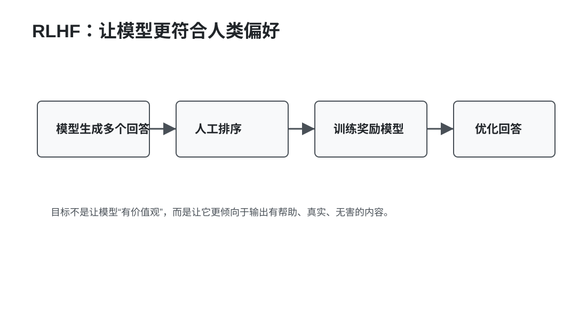
2022年11月30日，OpenAI发布了一款名为ChatGPT的人工智能聊天机器人。这个基于GPT-3.5架构的对话系统，通过一种被称为人类反馈强化学习（Reinforcement Learning from Human Feedback，RLHF）的技术进行了微调。RLHF的核心思想是：首先让人类标注者对模型的多个候选回答进行排序（哪个更好、更准确、更有帮助），然后训练一个奖励模型来预测人类的偏好，最后使用强化学习算法（如PPO）来优化语言模型，使其生成更可能获得高奖励的回答。它有点像作文评分不只看有没有语法错误，还要看是否切题、真实、有帮助、不会伤害他人；但这并不等于模型真正拥有价值观，只是让它更倾向于输出符合评分标准的内容。
ChatGPT的发布方式出奇地低调——没有新闻发布会，没有学术论文，只是在OpenAI的博客上发了一条简短的公告。然而，接下来的事情超出了所有人的预期。ChatGPT在发布后的五天内就吸引了超过一百万用户，两个月后月活跃用户突破一亿，成为人类历史上增长最快的消费级应用。人们用它来写论文、编代码、创作诗歌、翻译文本、解答问题、模拟面试、寻求建议……几乎无所不能。
ChatGPT的成功源于几个关键因素的交汇。首先，它的对话能力远超之前的聊天机器人——不仅能理解复杂的指令，还能在长篇对话中保持上下文的连贯性，承认自己的错误，甚至拒绝回答不当的问题。其次，它的使用门槛极低——任何人只要有邮箱就能免费使用，无需编程知识或专业背景。第三，它的发布时间恰逢其时——经历了两年多的新冠疫情，人们对远程工作和数字化工具的接受度大幅提高；同时，社交媒体上对AI的普遍关注也为ChatGPT的病毒式传播提供了土壤。
ChatGPT的爆火在全球引发了一场"AI地震"。Google管理层因为"红色警报"（Code Red）而紧张应对——ChatGPT直接威胁到Google的核心搜索业务；微软迅速与OpenAI深化合作，将ChatGPT的技术集成到Bing搜索引擎和Office办公套件中；中国的科技巨头（百度、阿里、字节跳动等）纷纷推出自己的大模型产品；各国政府开始加速制定AI监管政策；教育界对AI代写论文的现象展开激烈辩论；投资者疯狂涌入AI概念股，英伟达的股价在2023年上涨了超过200%。
2023年3月14日，OpenAI发布了GPT-4——这是当时最强大的语言模型，也是OpenAI首次将GPT系列扩展到文本之外的多模态能力。GPT-4可以接受文本和图像作为输入（虽然发布时图像功能尚未完全开放），并生成文本输出。它在各种专业考试中展现了惊人的表现：在模拟律师资格考试中排名前10%，在SAT数学考试中接近满分，在GRE语文考试中超过大多数考生。
GPT-4的技术细节被OpenAI严格保密——没有公布模型架构、参数量或训练数据的具体信息。OpenAI的解释是出于竞争和安全考虑。这一决定引发了研究界的一些批评，认为不透明性阻碍了科学的可重复性和对模型能力的深入理解。尽管如此，GPT-4的实际表现得到了广泛认可：它在推理、写作、编程、翻译等方面都明显优于GPT-3.5，错误率更低，"幻觉"现象也有所减少。
GPT-4的发布标志着大模型竞赛的全面升级。Google发布了Gemini系列模型，试图追赶OpenAI的领先地位；Anthropic推出了Claude系列，强调安全性和有用性；Meta开源了LLaMA模型，引发了开源大模型社区的蓬勃发展；中国的百度发布了文心一言，阿里巴巴发布了通义千问，智谱AI发布了ChatGLM……全球范围内的"百模大战"就此展开。
2024年5月，OpenAI发布了GPT-4o（"o"代表"omni"，即"全能"），这是一个真正的多模态模型——能够同时处理文本、音频和图像输入，并在这些模态之间自由转换。GPT-4o的响应延迟大幅降低，可以实现接近实时的语音对话。同年12月，OpenAI发布了o1和o3系列推理模型，这些模型使用了思维链（Chain of Thought）技术——在给出最终答案之前，先生成一系列中间推理步骤。o1在数学、科学和编程任务上取得了突破性进展，例如在AIME数学竞赛中从GPT-4o的12%正确率跃升至83%。
ChatGPT的出现不仅是一个技术事件，更是一个社会事件。它标志着AI从实验室走向大众的转折点，引发了各行各业的深刻变革：
教育领域：ChatGPT的出现对教育界造成了巨大冲击。学生们很快发现可以用ChatGPT来代写作业和论文，教师们则面临着辨别AI生成内容的困难。许多学校起初采取了禁止ChatGPT的政策，但很快就意识到这种禁令既不现实也不明智。教育界开始转向一种新的思路：将AI作为教学工具来培养学生的批判性思维和创造力，而不是简单地禁止它。到2025年，许多学校已经将AI辅助学习纳入课程体系，教学生如何有效地使用AI工具。
软件开发：GitHub Copilot（基于OpenAI的Codex模型）在2021年推出后，迅速成为程序员的重要助手。它可以自动生成代码片段、补全函数、解释代码功能、修复bug。到2025年，超过半数的专业程序员在日常工作中使用AI编程助手，软件开发的生产力得到了显著提升。这引发了关于"AI是否会取代程序员"的争论——虽然目前的共识是AI更可能成为"副驾驶"而非"替代者"，但入门级编程工作的需求确实出现了下降趋势。
医疗健康：AI在医疗领域的应用也取得了重要进展。Google DeepMind的AlphaFold系统在2020-2021年间成功预测了几乎所有已知蛋白质的三维结构，解决了生物学领域的重大难题。大语言模型被用于辅助医疗诊断、生成病历摘要、解答患者疑问。到2025年，多个国家的卫生监管部门已经批准了AI辅助诊断工具在临床中的应用，虽然医生仍然是最终决策者，但AI系统已经显著提高了诊断的效率和准确性。
创意产业：Midjourney、DALL-E、Stable Diffusion等AI图像生成工具彻底改变了视觉创作的方式。设计师、插画师和艺术家们开始将AI作为创作流程的一部分——用AI生成初稿，然后进行人工修改和完善。AI视频生成工具（如Sora、Runway Gen-2）使得视频内容的创作门槛大幅降低。音乐生成AI（如Suno、Udio）可以根据文本描述创作完整的歌曲。这些工具一方面极大地提升了创作效率，另一方面也引发了关于版权、原创性和艺术价值的深刻讨论。
科学研究：AI正在加速科学发现的步伐。2024年，Google DeepMind的AI系统AlphaGeometry在国际数学奥林匹克竞赛中达到了银牌水平。AI被用于设计新材料、发现新药物、预测气候模式、分析天文数据。在2024年诺贝尔物理学奖和化学奖中，AI相关的研究成为获奖主题——物理学奖授予了在神经网络和机器学习领域做出基础性贡献的科学家，化学奖则授予了将AI应用于蛋白质结构预测的研究者。这是AI研究首次获得诺贝尔奖级别的认可，标志着AI已经从一个应用技术转变为推动基础科学进步的核心力量。
随着AI能力的快速提升，AI安全和治理问题也日益紧迫。2023年，包括OpenAI、Google DeepMind和Anthropic的CEO在内的数百名AI研究者和行业领袖签署了一封公开信，呼吁暂停训练比GPT-4更强大的AI系统至少六个月，以便制定安全标准和治理框架。虽然这个提议并未被实际执行，但它引发了全球对AI风险的广泛关注。
各国政府开始加速制定AI监管政策。2024年3月，欧盟通过了《人工智能法》（AI Act），这是全球首部全面规制AI的法律法规，按照AI系统的风险等级进行分类管理。中国发布了《生成式人工智能服务管理暂行办法》，对AI生成内容提出了标识和审核要求。美国在2023年10月发布了《关于安全、可靠和可信赖的人工智能的行政命令》，要求建立AI安全评估标准和报告制度。
在技术层面，AI安全研究也取得了重要进展。Anthropic提出了宪法AI（Constitutional AI）方法，让AI系统在训练过程中学习遵守一套"宪法原则"，以提高其安全性和可靠性。OpenAI的审议式对齐（deliberative alignment）技术让模型在推理过程中内部参照安全策略，使安全行为更加内化和鲁棒。研究者们还发展了红队测试（Red Teaming）、模型可解释性和AI对齐（Alignment）等方法，试图理解和控制大模型的行为。
然而，AI安全仍然是一个充满挑战的领域。"对齐问题"——如何确保超级智能系统的目标与人类价值观一致——被认为可能是21世纪最重要的技术挑战之一。它有点像给一个很能干的助手设护栏、立规矩：不仅要让它能做事，还要让它按正确目标、边界和价值约束去做事。随着模型能力的不断增强，确保这些强大系统不会被滥用或产生意外的有害后果，成为AI研究者、政策制定者和全社会共同面临的紧迫课题。
"2025年是AI从工具变为伙伴的一年。"——行业观察者，2026年
本章涉及2025-2026年的最新进展，技术产品、基准成绩和产业数据变化很快。阅读时应区分三类信息：公司官方发布、学术论文或评测报告、媒体和行业观察。用于课堂报告或论文写作时，建议回到官方公告、论文原文和权威数据库核验具体日期、指标和引用。
2025年8月6日，OpenAI发布了GPT-5——这是该公司历史上首款被定位为"统一智能系统"的旗舰模型，而非单一模型。GPT-5引入了动态路由架构：系统根据查询的复杂程度，自动选择使用快速响应模式还是深度思考模式。这一设计使得GPT-5在日常对话中保持流畅迅速，而在面对复杂问题时则可以投入更多计算资源进行深度推理。
GPT-5在发布时创下了一系列新的性能纪录：在AIME 2025数学竞赛中达到94.6%的准确率，在SWE-bench编码测试中达到74.9%的通过率，在GPQA Diamond科学问答基准上也达到了领先水平。更重要的是，GPT-5将多模态理解与推理能力整合到单一系统中——用户可以通过文本、语音和图像与模型交互，模型能够在这些模态之间无缝切换和综合理解。
在2025年下半年至2026年上半年，OpenAI快速迭代了GPT-5系列：GPT-5.1（2025年底）优化了编码能力；GPT-5.2（2025年12月）增强了推理深度；GPT-5.3和GPT-5.4（2026年3月）引入了原生的计算机使用能力和百万级token的上下文窗口；GPT-5.5（2026年4月）则进一步提升了智能体能力，减少了幻觉率，并在各项专业基准测试中持续刷新纪录。上下文窗口越大，就像书桌越大，可以同时摊开的资料越多；但书桌变大不等于自动读懂所有材料，关键信息仍需要清晰组织。
GPT-5.5的一个标志性进步是智能体能力（Agentic Capabilities）的显著提升。它不仅能够回答问题，还能够自主地执行多步骤任务——比如编写代码、调试程序、搜索信息、分析数据、制作文档。这标志着AI从"被动响应者"向"主动执行者"的转变。OpenAI还推出了Frontier企业平台，帮助企业构建和部署AI智能体，目标是将AI更深入地整合到企业的业务流程中。
2024年至2025年间，AI领域发生了一次重要的架构转型——推理模型（Reasoning Models）的兴起。传统的语言模型在收到问题后立即生成回答，而推理模型则会在内部进行多步"思考"，生成一系列中间推理步骤，然后再给出最终答案。这种"先思考后回答"的模式使得模型在数学、科学和编程等需要严密逻辑推理的任务上表现大幅提升。
OpenAI的o1（2024年9月）是第一款大规模商用的推理模型，它在AIME数学竞赛中取得了83%的准确率，远超GPT-4o的12%。随后的o3（2024年12月）进一步将这一数字推至88%，并在ARC-AGI基准上接近人类水平。推理模型的核心思想是测试时计算扩展（Test-time Compute Scaling）——不是通过增加训练数据或模型参数来提升能力，而是在推理时分配更多的计算资源，让模型"想得更久、更仔细"。
这一范式转变的意义深远：它表明即使模型规模保持不变，通过改进推理策略也可以持续提升智能水平。这为AI发展提供了一条不同于"暴力缩放"的新路径，可能更加高效和可持续。推理模型的成功也引发了关于AI系统"思考过程"的哲学讨论——当AI在给出答案前经历了一段复杂的内部推理，这是否意味着它"真正在思考"？还是说这只是另一种更复杂的模式匹配？这些问题至今仍在争论之中。
到2026年初，全球AI领域呈现出多极竞争格局，OpenAI的领先地位虽然依然稳固，但已面临越来越强劲的挑战：
Anthropic的Claude系列在2025-2026年间持续进化。Claude 4（Opus和Sonnet版本）强调安全性和可靠性，在编码和推理任务上表现卓越。Anthropic还推出了Claude Code——一个AI编码助手，据报道在2026年初已经贡献了GitHub公共仓库中约4%的提交。Claude的独特卖点是其"宪法AI"安全理念和对用户隐私的承诺（Anthropic承诺Claude永远不会包含广告）。
Google DeepMind的Gemini系列快速迭代，Gemini 3（2025年底至2026年初）在上下文窗口（支持超过100万token）和多模态理解方面展现了强大实力。Google将Gemini深度集成到搜索、办公和云服务中，利用其庞大的用户基础和分发渠道与OpenAI竞争。
Meta采取了开源策略，LLaMA系列模型在开源社区中获得了广泛采用。2025年4月发布的LLaMA 4包含多个变体，虽然在与顶级闭源模型的竞争中略有不足，但其开放性吸引了大量开发者和研究者。
中国AI企业在2025-2026年间展现出强劲的追赶势头。阿里巴巴的通义千问（Qwen）系列在开源社区中获得了极高的下载量和衍生版本数量；DeepSeek的V4系列以极高的性价比（frontier级别的能力，但API成本仅为西方模型的几分之一）对国际市场产生了冲击；智谱AI的GLM系列、MiniMax和月之暗面（Moonshot AI）等公司也在各自擅长的领域取得了显著进展。2025年被称为中国AI的"DeepSeek时刻"——中国开源模型的技术水平和生态影响力达到了新的高度。
此外，Mistral AI（法国）、xAI（埃隆·马斯克创立）和众多初创公司也在激烈竞争中寻找自己的定位。整个AI行业呈现出前所未有的活力和多样性。
2025-2026年最显著的技术趋势之一是智能体AI（Agentic AI）的快速发展。智能体AI指的是能够自主感知环境、制定计划、执行动作并持续学习的AI系统。与传统的问答式AI不同，智能体AI可以主动地完成复杂的任务，而不需要人类逐步指导。可以把它想象成拿着待办清单办事的数字助理：先理解目标，再拆任务、调用工具、检查结果，必要时继续调整下一步。
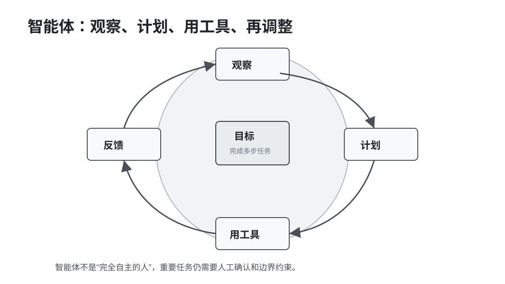
OpenAI的GPT-5.4和5.5引入了原生的"计算机使用"能力——模型可以直接操作浏览器、读写文件、执行代码，像人类一样与计算机交互。Anthropic的Claude Code则专注于软件工程领域，可以自主地进行代码编写、调试和重构。这些系统的出现标志着AI从"对话工具"向"数字助手"甚至"数字同事"的进化。
2026年，智能体AI开始在实际工作场景中大规模部署。高盛在会计和合规部门采用了Claude AI来自动化工作流程；Waymo的自动驾驶出租车在更多城市投入运营；制造业中AI驱动的质量检测和预测性维护系统成为标配。当然，这种自动化也带来了就业市场的不确定性——Anthropic在2026年3月发布的一份研究报告警告说，AI在理论上已经可以处理计算机科学和管理领域的大多数任务，虽然目前实际采用率仍然较低，但随着差距的缩小，白领工人可能面临"大衰退"级别的就业冲击。
2024年诺贝尔物理学奖和化学奖授予了AI相关的研究，这是AI在科学界获得的最高认可。物理学奖表彰了约翰·霍普菲尔德（John Hopfield）和杰弗里·辛顿在人工神经网络和机器学习领域的开创性贡献——霍普菲尔德网络为后来的深度学习提供了理论基础，而辛顿则是反向传播算法和深度信念网络的核心推动者。化学奖则授予了德米斯·哈萨比斯（Demis Hassabis）、约翰·江珀（John Jumper）和大卫·贝克（David Baker），以表彰他们将AI应用于蛋白质结构预测（AlphaFold）和蛋白质设计的工作。
诺贝尔奖的授予标志着AI已经深度融入了基础科学研究的主流。AI不再只是一个应用技术，而是成为推动科学发现的核心方法论之一。从药物发现到材料科学，从气候建模到天文学，AI正在加速各个学科领域的知识积累和创新步伐。这一趋势在2025-2026年间继续深化，AI for Science（AI4S）成为最活跃的研究前沿之一。
到2026年中期，AI领域最大的话题之一仍然是通用人工智能（Artificial General Intelligence，AGI）——即能够在绝大多数认知任务上达到或超过人类水平的AI系统。虽然对于AGI的确切定义和实现时间表仍存在巨大分歧，但越来越多的研究者认为，当前的大模型技术路线可能是通往AGI的可行路径。
OpenAI CEO萨姆·奥尔特曼（Sam Altman）多次表示，GPT-5和后续版本正在逐步接近AGI的门槛。一些研究者则更为谨慎，指出当前的大模型在因果关系理解、物理世界常识、长期规划和持续学习等方面仍存在根本性缺陷。2026年5月，OpenAI发布了GPT-5.5，在一些专业评估中匹配或超过了83%的知识工作场景下的人类专家表现，但距离真正的通用智能仍有差距。
AI安全问题也随着能力的提升而变得更加紧迫。2025年底，Ilya Sutskever（OpenAI的联合创始人之一）离开OpenAI后创立了Safe Superintelligence（SSI），专注于安全超级智能的研究。各国政府也在加速制定AI治理框架，试图在技术发展与风险管控之间找到平衡。
无论AGI何时到来，2025-2026年的AI发展已经深刻地改变了人类社会的面貌。AI从一个遥远的研究课题，变成了每个人日常生活和工作的一部分。这个变革的速度如此之快，以至于社会、法律、伦理和教育体系都在努力跟上技术的步伐。我们正在经历的历史性转型，其深远影响可能堪比甚至超越工业革命——而我们只是处于这场变革的开端。
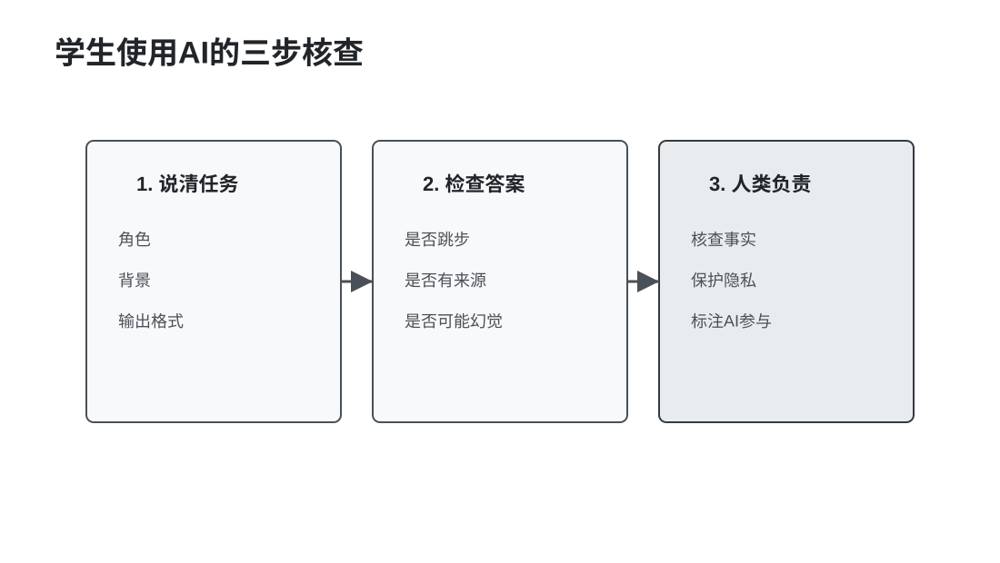
AI素养不是会不会输入提示词，而是能否把AI放在正确的位置上使用。
许多人第一次使用AI时，会把它当成搜索框：输入一句很短的问题，然后期待得到完美答案。更有效的方法是把AI当成一个需要背景信息的协作对象。你给出的上下文越明确，AI越容易产生可用的结果。
例如，与其问"讲讲Transformer"，不如问："请面向高中生，用不超过800字解释Transformer为什么重要，先用生活类比讲自注意力，再列出3个关键词和2个容易误解的地方。"后者更容易得到可学习、可检查、可继续追问的回答。
AI可以帮助学生解释难点、生成练习、模拟面试、检查文章结构、整理复习计划。但如果直接把AI生成的作业、论文或实验报告当成自己的成果提交，就越过了学术诚信的边界。真正的学习发生在理解、判断、修改和表达的过程中，而不是把答案交给工具代劳。
AI生成内容时可能混入错误事实、过期信息或不存在的引用。凡是涉及考试答案、论文引用、新闻事件、法律政策、医学健康、财务投资、工程安全的内容，都不能只依赖AI回答。更稳妥的流程是：先让AI帮你建立问题框架，再到教材、论文、政府网站、公司官方文档、专业数据库或老师指定资料中核实。
不要随意把身份证号、家庭住址、病历、成绩单、合同、公司内部文件、未公开研究数据等敏感信息输入公共AI工具。即使某些工具承诺不会用用户数据训练模型，也应遵守学校、单位和法律的基本要求。
版权问题同样重要。AI可以帮助生成草稿和灵感，但训练数据、输出内容和二次创作之间的边界仍在不断讨论中。用于公开发表、商业设计、课程作业或比赛作品时，应主动标注AI参与程度，并确认素材来源、授权范围和平台规则。
AI能扩大人的能力，也会放大人的疏忽。一个错误的医疗建议、一个未经核查的新闻摘要、一段带有安全漏洞的代码、一次未经同意的数据上传，都可能造成现实后果。因此，越是在重要场景中使用AI，越要明确最终责任人是谁。
"我们塑造工具，工具也塑造我们。"——马歇尔·麦克卢汉
在本书的结尾，让我们回到开头提出的问题：什么是智能？机器能否思考？从古希腊的逻辑学到2026年的大模型，人类对这些问题已经探索了两千多年。我们还没有找到最终的答案，但我们的理解无疑已经大大深化了。
通过回顾AI的发展历史，我们可以得出几个重要的启示：
第一，AI的发展从来不是线性的。从两次AI寒冬到深度学习的爆发，从符号AI的衰落到神经网络的复兴，AI的历史充满了曲折和意外。那些曾经被认为"死胡同"的方向，可能在条件成熟后焕发新生；那些被过度 hype 的方法，也可能在幻灭后留下宝贵的遗产。对AI未来的预测应该保持谦逊——我们今天确信的东西，可能明天就会被颠覆。
第二，技术突破往往来自多种因素的交汇。AlexNet的成功不仅是因为卷积神经网络架构的优越性，还因为GPU计算能力的成熟、大规模数据集（ImageNet）的可用性，以及ReLU和Dropout等技术创新的同时出现。Transformer的爆发不仅是因为自注意力机制的优雅，还因为计算能力的持续提升、互联网带来的海量训练数据，以及整个NLP领域对更强大模型的迫切需求。AI的进步是技术、数据、计算资源和人才共同作用的结果。
第三，理论与实践的互动推动了AI的进化。从图灵机的抽象理论到冯·诺依曼架构的工程实现，从感知机的数学模型到深度神经网络的工业部署，AI的每一次重大进步都是理论洞见与工程实践相互促进的结果。纯粹的数学抽象如果缺乏实际的应用场景，可能长期被忽视；而缺乏理论指导的盲目工程尝试，也容易陷入困境。
第四，AI的终极挑战可能不是技术性的。随着AI能力的快速提升，我们面临的核心问题越来越不是"AI能做什么"，而是"AI应该做什么"和"如何确保AI造福全人类"。对齐问题、安全性、公平性、隐私保护、就业影响、社会不平等——这些问题的解决需要技术创新，也需要法律规制、伦理框架、社会共识和国际合作。AI的未来不仅取决于算法的进步，更取决于人类社会的智慧和选择。
站在2026年中期的这个时间节点，AI正处于一个激动人心的十字路口。一方面，大模型展现出的能力令人惊叹——它们可以写作、编程、推理、创造，在许多专业领域已经达到了人类专家的水平。另一方面，我们对这些系统的理解仍然非常有限——它们为什么能工作？它们的局限性在哪里？如何确保它们始终服务于人类的利益？这些根本性问题仍然没有满意的答案。
展望未来，AI的发展可能会沿着几个方向继续深化：多模态理解和生成能力的进一步提升，使AI能够更好地感知和交互于物理世界；智能体AI的成熟，使AI从被动工具变为主动助手；科学发现的加速，使AI成为推动知识前沿的核心力量；以及人机协作的深化，使人类和AI各自发挥优势，共同解决复杂的全球性问题。
无论技术如何发展，最终的目标应该始终是增进人类的福祉。古希腊哲学家普罗泰戈拉说："人是万物的尺度。"在AI时代，这句话或许应该被重新诠释为："人类的福祉是AI发展的尺度。"技术的力量越大，我们对这种力量的使用就越需要智慧和责任。
AI的发展史是一部人类探索自身智力本质的史诗。从亚里士多德的三段论到Transformer的自注意力，从帕斯卡的齿轮计算器到GPT-5.5的万亿参数，从达特茅斯会议的梦想家们到全球数百万AI从业者——这场跨越千年的探索仍在继续。我们有幸生活在这个智能革命的时代，见证并参与这场改变人类文明进程的伟大变革。愿我们以智慧引导技术，以责任驾驭力量，共同创造一个AI与人类和谐共存、相互成就的美好未来。